Amerika Abraham Lincoln

Gründerväter
Alle Diplomatie-Politikplätze in der aktuellen Regierung werden in Joker-Plätze umgewandelt. +1  diplomatische Gunst pro Runde für jeden Joker-Platz der Regierung.
diplomatische Gunst pro Runde für jeden Joker-Platz der Regierung.
Emanzipationserklärung
Industriegebiete gewähren +2  Annehmlichkeiten und +3 Loyalität pro Runde, aber Eure Plantagen bringen -2 Loyalität pro Runde. Erhaltet nach dem Bau von Industriegebieten und ihren Gebäuden eine kostenlose Nahkampfeinheit. Die kostenlose Einheit benötigt keine Ressourcen beim Erstellen oder für den Unterhalt und erhält +5
Annehmlichkeiten und +3 Loyalität pro Runde, aber Eure Plantagen bringen -2 Loyalität pro Runde. Erhaltet nach dem Bau von Industriegebieten und ihren Gebäuden eine kostenlose Nahkampfeinheit. Die kostenlose Einheit benötigt keine Ressourcen beim Erstellen oder für den Unterhalt und erhält +5  Kampfstärke.
Kampfstärke.
Filmstudio

Einzigartiges Gebäude von Amerika. +100 %  Tourismus-Druck dieser Stadt auf andere Zivilisationen, wenn das Spiel in der Moderne ankommt.
Tourismus-Druck dieser Stadt auf andere Zivilisationen, wenn das Spiel in der Moderne ankommt.
P-51 Mustang

Amerikanische Spezial-Lufteinheit des Atomzeitalters, die den Jäger ersetzt. Erhält +5  Kampfstärke gegen Jäger, hat +2 Flugradius und erhält +50 % Erfahrung.
Kampfstärke gegen Jäger, hat +2 Flugradius und erhält +50 % Erfahrung.
Amerika Teddy Roosevelt (Bull Moose)
.webp)
Gründerväter
Alle Diplomatie-Politikplätze in der aktuellen Regierung werden in Joker-Plätze umgewandelt. +1  diplomatische Gunst pro Runde für jeden Joker-Platz der Regierung.
diplomatische Gunst pro Runde für jeden Joker-Platz der Regierung.
Antikes und Parks
Atemberaubende Geländefelder, die entweder an ein Naturwunder oder einen Berg angrenzen, erhalten +2  Wissenschaft. Atemberaubende Geländefelder, die entweder an ein Wunder oder einen Wald angrenzen, erhalten +2
Wissenschaft. Atemberaubende Geländefelder, die entweder an ein Wunder oder einen Wald angrenzen, erhalten +2  Kultur. Alle Felder in Städten mit einem Nationalpark haben +1 Anziehungskraft.
Kultur. Alle Felder in Städten mit einem Nationalpark haben +1 Anziehungskraft.
Filmstudio
Einzigartiges Gebäude von Amerika. +100 %  Tourismus-Druck dieser Stadt auf andere Zivilisationen, wenn das Spiel in der Moderne ankommt.
Tourismus-Druck dieser Stadt auf andere Zivilisationen, wenn das Spiel in der Moderne ankommt.
P-51 Mustang
Amerikanische Spezial-Lufteinheit des Atomzeitalters, die den Jäger ersetzt. Erhält +5  Kampfstärke gegen Jäger, hat +2 Flugradius und erhält +50 % Erfahrung.
Kampfstärke gegen Jäger, hat +2 Flugradius und erhält +50 % Erfahrung.
Amerika Teddy Roosevelt (Rough Rider)
.webp)
Gründerväter
Alle Diplomatie-Politikplätze in der aktuellen Regierung werden in Joker-Plätze umgewandelt. +1  diplomatische Gunst pro Runde für jeden Joker-Platz der Regierung.
diplomatische Gunst pro Runde für jeden Joker-Platz der Regierung.
Roosevelt-Folgesatz
Einheiten erhalten +5  Kampfstärke auf ihrem Heimatkontinent. Gesandte in Stadtstaaten, mit denen Ihr einen
Kampfstärke auf ihrem Heimatkontinent. Gesandte in Stadtstaaten, mit denen Ihr einen  Handelsweg habt, zählen als jeweils zwei
Handelsweg habt, zählen als jeweils zwei  Gesandte. Erlangt die Spezialeinheit Rough Rider durch die Technologie 'Drall'.
Gesandte. Erlangt die Spezialeinheit Rough Rider durch die Technologie 'Drall'.
Filmstudio
Einzigartiges Gebäude von Amerika. +100 %  Tourismus-Druck dieser Stadt auf andere Zivilisationen, wenn das Spiel in der Moderne ankommt.
Tourismus-Druck dieser Stadt auf andere Zivilisationen, wenn das Spiel in der Moderne ankommt.
P-51 Mustang
Amerikanische Spezial-Lufteinheit des Atomzeitalters, die den Jäger ersetzt. Erhält +5  Kampfstärke gegen Jäger, hat +2 Flugradius und erhält +50 % Erfahrung.
Kampfstärke gegen Jäger, hat +2 Flugradius und erhält +50 % Erfahrung.
Rough Rider

Amerikanische Spezialeinheit des Industriezeitalters mit Teddy Roosevelt als Anführer, die den Kürassier ersetzt. Verdient  Kultur aus Eliminierungen auf dem
Kultur aus Eliminierungen auf dem  Hauptstadt-Kontinent. +10
Hauptstadt-Kontinent. +10  Kampfstärke bei Kämpfen auf Hügeln. Niedrigere Unterhaltskosten.
Kampfstärke bei Kämpfen auf Hügeln. Niedrigere Unterhaltskosten.
Arabien Saladin (Wesir)
.webp)
Der letzte Prophet
Automatisch den letzten  Großen Propheten erhalten, wenn der vorletzte beansprucht wurde (und nicht bereits ein
Großen Propheten erhalten, wenn der vorletzte beansprucht wurde (und nicht bereits ein  Großer Prophet verdient wurde). +1
Großer Prophet verdient wurde). +1  Wissenschaft für jede fremde Stadt mit Arabiens Religion.
Wissenschaft für jede fremde Stadt mit Arabiens Religion.
Rechtschaffener Glauben
Das Kultgebäude der arabischen Religion kann von jedem Spieler für ein Zehntel der üblichen  Glaubenskosten erworben werden. Das Kultgebäude steigert in arabischen Städten den Ertrag von
Glaubenskosten erworben werden. Das Kultgebäude steigert in arabischen Städten den Ertrag von  Wissenschaft,
Wissenschaft,  Glauben und
Glauben und  Kultur um 10 %.
Kultur um 10 %.
Madrasa
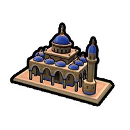
Einzigartiges Gebäude von Arabien. Bonus auf  Glauben, der dem Nachbarschaftsbonus des Campus-Bezirks entspricht.
Glauben, der dem Nachbarschaftsbonus des Campus-Bezirks entspricht.
Mameluke
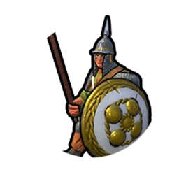
Arabische einzigartige Einheit des Mittelalters, die den Ritter ersetzt. Heilt sich am Ende jeder Runde, selbst, nachdem er sich bewegt hat oder angegriffen wurde.
Arabien Saladin (Sultan)
.webp)
Der letzte Prophet
Automatisch den letzten  Großen Propheten erhalten, wenn der vorletzte beansprucht wurde (und nicht bereits ein
Großen Propheten erhalten, wenn der vorletzte beansprucht wurde (und nicht bereits ein  Großer Prophet verdient wurde). +1
Großer Prophet verdient wurde). +1  Wissenschaft für jede fremde Stadt mit Arabiens Religion.
Wissenschaft für jede fremde Stadt mit Arabiens Religion.
Der Siegreiche
+100 % Flankierungs- und Unterstützungsbonus für alle Kampf- und religiösen Einheiten.
Madrasa
Einzigartiges Gebäude von Arabien. Bonus auf  Glauben, der dem Nachbarschaftsbonus des Campus-Bezirks entspricht.
Glauben, der dem Nachbarschaftsbonus des Campus-Bezirks entspricht.
Mameluke
Arabische einzigartige Einheit des Mittelalters, die den Ritter ersetzt. Heilt sich am Ende jeder Runde, selbst, nachdem er sich bewegt hat oder angegriffen wurde.
Australien John Curtin

Land Down Under
+3  Wohnraum in Küstenstädten. Weiden lösen einen Kulturschock aus. Erträge von Campussen, Handelszentren, Heiligen Stätten und Theaterplätzen erhöhen sich um +1 auf Geländefeldern mit der Anziehungskraft 'Bezaubernd', oder um +3 auf Feldern mit der Anziehungskraft 'Atemberaubend'.
Wohnraum in Küstenstädten. Weiden lösen einen Kulturschock aus. Erträge von Campussen, Handelszentren, Heiligen Stätten und Theaterplätzen erhöhen sich um +1 auf Geländefeldern mit der Anziehungskraft 'Bezaubernd', oder um +3 auf Feldern mit der Anziehungskraft 'Atemberaubend'.
Festung der Zivilisation
+100%  Produktion, wenn Ihr entweder in den letzten 10 Runden eine Kriegserklärung erhalten oder eine Stadt befreit habt.
Produktion, wenn Ihr entweder in den letzten 10 Runden eine Kriegserklärung erhalten oder eine Stadt befreit habt.
Outback-Station

Schaltet die Handwerker-Fähigkeit zum Bau einer Outback-Station frei, die einzigartig für Australien ist.
+1  Nahrung und +1
Nahrung und +1  Produktion. +1
Produktion. +1  Nahrung für jede angrenzende Weide. Zusätzliche
Nahrung für jede angrenzende Weide. Zusätzliche  Nahrung und
Nahrung und  Produktion beim Fortschritt im Technologie- und Ausrichtungsbaum für angrenzende Outback-Stationen und Weiden. Kann nur auf Geländefeldern mit Wüste, Wüstenhügeln, Grasland und Steppe gebaut werden.
Produktion beim Fortschritt im Technologie- und Ausrichtungsbaum für angrenzende Outback-Stationen und Weiden. Kann nur auf Geländefeldern mit Wüste, Wüstenhügeln, Grasland und Steppe gebaut werden.
Digger
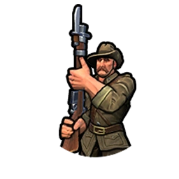
Australische Spezialeinheit der Moderne, welche die Infanterie ersetzt. +10  Kampfstärke beim Kampf auf Küsten-Geländefeldern. +5
Kampfstärke beim Kampf auf Küsten-Geländefeldern. +5  Kampfstärke beim Kampf auf neutralem oder fremdem Gebiet.
Kampfstärke beim Kampf auf neutralem oder fremdem Gebiet.
Aztekenland Montezuma

Legende der Fünf Sonnen
Gebt Handwerker-Ladungen aus, um 20 % der ursprünglichen Bezirkskosten abzuschließen.
Geschenke für den Tlatoani
Luxusgüter im eigenen Territorium bringen eine Annehmlichkeit für 2 zusätzliche Städte. +1  Kampfstärke beim Angreifen für jedes unterschiedliche Luxusgut, das im Azteken-Gebiet modernisiert wurde.
Kampfstärke beim Angreifen für jedes unterschiedliche Luxusgut, das im Azteken-Gebiet modernisiert wurde.
Tlachtli
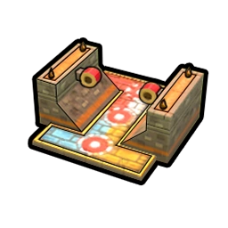
Einzigartiges Gebäude der Azteken. Gewährt +2  Annehmlichkeiten, +2
Annehmlichkeiten, +2  Kultur, +2
Kultur, +2  Glauben und +1
Glauben und +1  Großer-General-Punkt. Bietet +1
Großer-General-Punkt. Bietet +1  Tourismus, nachdem die Ausrichtung Naturschutz erreicht wurde.
Tourismus, nachdem die Ausrichtung Naturschutz erreicht wurde.
Adlerkrieger

Aztekische Spezialeinheit der Antike, die den Krieger ersetzt. Hat eine Chance, Militäreinheiten anderer Zivilisationen gefangen zu nehmen, indem sie diese zu Handwerkern umwandelt.
Babylon Hammurabi

Enuma Anu Enlil
 Heurekas liefern die
Heurekas liefern die  Wissenschaft für Technologien. -50 %
Wissenschaft für Technologien. -50 %  Wissenschaft pro Runde.
Wissenschaft pro Runde.
Ninu Ilu Sirum
Beim erstmaligen Bau jedes Spezialbezirks außer dem Regierungsplatz erhaltet Ihr das Gebäude mit den niedrigsten  Produktionskosten, das aktuell in diesem Bezirk gebaut werden kann. Beim erstmaligen Bau jedes anderen Bezirks erhaltet Ihr einen
Produktionskosten, das aktuell in diesem Bezirk gebaut werden kann. Beim erstmaligen Bau jedes anderen Bezirks erhaltet Ihr einen  Gesandten.
Gesandten.
Palgum
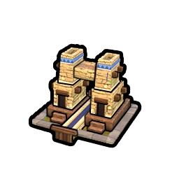
Einzigartiges Gebäude von Babylon. +1  Wohnraum und +2
Wohnraum und +2  Produktion. Süßwasser-Geländefelder erhalten +1
Produktion. Süßwasser-Geländefelder erhalten +1  Nahrung. Die Stadt muss an einen Fluss angrenzen.
Nahrung. Die Stadt muss an einen Fluss angrenzen.
Sabum Kibittum

Babylonische Nahkampf-Spezialeinheit der Antike. +17  Kampfstärke gegen Schwere und Leichte Kavallerie-Beförderungsklasse-Einheiten. Diese Einheit besitzt 3
Kampfstärke gegen Schwere und Leichte Kavallerie-Beförderungsklasse-Einheiten. Diese Einheit besitzt 3  Fortbewegung und Sicht.
Fortbewegung und Sicht.
Brasilien Peter II.

Amazonas
Regenwald-Geländefelder bieten einen Nachbarschaftsbonus von +1 für Campus-, Handelszentrum-, Heilige-Stätte- und Theaterplatz-Bezirke und gewähren angrenzenden Geländefeldern +1 Anziehungskraft statt der üblichen -1.
Edelmütig
Nach dem Rekrutieren oder Fördern einer  Großen Persönlichkeit werden 20 % der
Großen Persönlichkeit werden 20 % der  Große-Persönlichkeit-Punktekosten zurückerstattet.
Große-Persönlichkeit-Punktekosten zurückerstattet.
Straßenkarneval

Ein ausschließlich Brasilien zur Verfügung stehender Bezirk. Ersetzt den Unterhaltungskomplex-Bezirk und bringt +2  Annehmlichkeiten. Schaltet außerdem das Karneval-Projekt frei, das bei der Produktion zusätzlich +1
Annehmlichkeiten. Schaltet außerdem das Karneval-Projekt frei, das bei der Produktion zusätzlich +1  Annehmlichkeit und nach dem Abschluss mehrere
Annehmlichkeit und nach dem Abschluss mehrere  Große-Persönlichkeit-Punkte bringt. Kann nicht in Städten mit einer Copacabana errichtet werden.
Große-Persönlichkeit-Punkte bringt. Kann nicht in Städten mit einer Copacabana errichtet werden.
Copacabana
Ein ausschließlich Brasilien zur Verfügung stehender Bezirk. Ersetzt den Wasserpark-Bezirk und bringt +2  Annehmlichkeit. Schaltet außerdem das Karneval-Projekt frei, das bei der Produktion zusätzlich +1
Annehmlichkeit. Schaltet außerdem das Karneval-Projekt frei, das bei der Produktion zusätzlich +1  Annehmlichkeit und nach dem Abschluss mehrere
Annehmlichkeit und nach dem Abschluss mehrere  Große-Persönlichkeit-Punkte bringt. Kann nicht in einer Stadt mit einem Straßenkarneval oder an einem Riff gebaut werden.
Große-Persönlichkeit-Punkte bringt. Kann nicht in einer Stadt mit einem Straßenkarneval oder an einem Riff gebaut werden.
Minas Geraes

Brasilianische Spezialeinheit des Industriezeitalters, die das Kriegsschiff ersetzt. Stärker als das Kriegsschiff. Freigeschaltet durch Nationalismus.
Byzanz Basilius II.

Ordnung
Einheiten erhalten +3  Kampfstärke oder
Kampfstärke oder  religiöse Stärke für jede heilige Stadt, die zur Religion von Byzanz bekehrt wird (einschließlich der byzantinischen heiligen Stadt). Die Religion von Byzanz breitet sich in nahegelegene Städte aus, wenn eine feindliche Einheit einer Zivilisation oder eines Stadtstaats besiegt wird. +1
religiöse Stärke für jede heilige Stadt, die zur Religion von Byzanz bekehrt wird (einschließlich der byzantinischen heiligen Stadt). Die Religion von Byzanz breitet sich in nahegelegene Städte aus, wenn eine feindliche Einheit einer Zivilisation oder eines Stadtstaats besiegt wird. +1  Großer-Prophet-Punkt durch Städte mit einer Heiligen Stätte.
Großer-Prophet-Punkt durch Städte mit einer Heiligen Stätte.
Purpurgeboren
Schwere und Leichte Kavallerieeinheiten verursachen in Städten, die derselben Religion wie Byzanz anhängen, den vollen Schaden. Erlangt die Spezialeinheit Tagma, wenn die Ausrichtung Göttliches Recht entdeckt wurde.
Hippodrom

Ein Bezirk, der ausschließlich Byzanz zur Verfügung steht. Ersetzt den Unterhaltungskomplex-Bezirk, bringt +3  Annehmlichkeiten und ist günstiger zu bauen. Wenn das Hippodrom und Gebäude in diesem Bezirk gebaut werden, erhaltet Ihr eine Schwere Kavallerie-Einheit. Einheiten, die durch diesen Bezirk gewährt werden, verbrauchen für den Unterhalt keine Ressourcen. Kann nicht in Städten mit einem Wasserpark errichtet werden.
Annehmlichkeiten und ist günstiger zu bauen. Wenn das Hippodrom und Gebäude in diesem Bezirk gebaut werden, erhaltet Ihr eine Schwere Kavallerie-Einheit. Einheiten, die durch diesen Bezirk gewährt werden, verbrauchen für den Unterhalt keine Ressourcen. Kann nicht in Städten mit einem Wasserpark errichtet werden.
Dromone
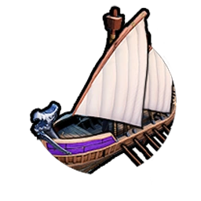
Byzantinische Spezialeinheit der Klassik, die die Quadrireme mit größerer Reichweite ersetzt und +10  Kampfstärke gegen Einheiten erhält.
Kampfstärke gegen Einheiten erhält.
Tagma
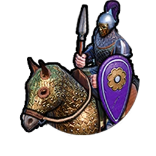
Spezialeinheit des Mittelalters von Basilius II., die den Ritter ersetzt. Landeinheiten innerhalb von 1 Geländefeld Entfernung zum Tagma erhalten +4  Kampfstärke oder
Kampfstärke oder  religiöse Stärke.
religiöse Stärke.
Byzanz Theodora

Ordnung
Einheiten erhalten +3  Kampfstärke oder
Kampfstärke oder  religiöse Stärke für jede heilige Stadt, die zur Religion von Byzanz bekehrt wird (einschließlich der byzantinischen heiligen Stadt). Die Religion von Byzanz breitet sich in nahegelegene Städte aus, wenn eine feindliche Einheit einer Zivilisation oder eines Stadtstaats besiegt wird. +1
religiöse Stärke für jede heilige Stadt, die zur Religion von Byzanz bekehrt wird (einschließlich der byzantinischen heiligen Stadt). Die Religion von Byzanz breitet sich in nahegelegene Städte aus, wenn eine feindliche Einheit einer Zivilisation oder eines Stadtstaats besiegt wird. +1  Großer-Prophet-Punkt durch Städte mit einer Heiligen Stätte.
Großer-Prophet-Punkt durch Städte mit einer Heiligen Stätte.
Metanoia
Heilige Stätten gewähren  Kultur in Höhe ihres Nachbarschaftsbonus. Bauernhöfe gewähren dem Hippodrom und Heiligen Stätten einen
Kultur in Höhe ihres Nachbarschaftsbonus. Bauernhöfe gewähren dem Hippodrom und Heiligen Stätten einen  Glauben-Nachbarschaftsbonus.
Glauben-Nachbarschaftsbonus.
Hippodrom
Ein Bezirk, der ausschließlich Byzanz zur Verfügung steht. Ersetzt den Unterhaltungskomplex-Bezirk, bringt +3  Annehmlichkeiten und ist günstiger zu bauen. Wenn das Hippodrom und Gebäude in diesem Bezirk gebaut werden, erhaltet Ihr eine Schwere Kavallerie-Einheit. Einheiten, die durch diesen Bezirk gewährt werden, verbrauchen für den Unterhalt keine Ressourcen. Kann nicht in Städten mit einem Wasserpark errichtet werden.
Annehmlichkeiten und ist günstiger zu bauen. Wenn das Hippodrom und Gebäude in diesem Bezirk gebaut werden, erhaltet Ihr eine Schwere Kavallerie-Einheit. Einheiten, die durch diesen Bezirk gewährt werden, verbrauchen für den Unterhalt keine Ressourcen. Kann nicht in Städten mit einem Wasserpark errichtet werden.
Dromone
Byzantinische Spezialeinheit der Klassik, die die Quadrireme mit größerer Reichweite ersetzt und +10  Kampfstärke gegen Einheiten erhält.
Kampfstärke gegen Einheiten erhält.
Kanada Wilfrid Laurier

Vier Gesichter des Friedens
Kann keinen Stadtstaaten den Krieg erklären oder Überraschungskriege starten. Kanada kann kein Überraschungskrieg erklärt werden. Ihr verdient pro 100  Tourismus pro Runde 1
Tourismus pro Runde 1  diplomatische Gunst pro Runde. Ihr erhaltet +100 %
diplomatische Gunst pro Runde. Ihr erhaltet +100 %  diplomatische Gunst für den erfolgreichen Abschluss eines Notfalls oder punkteorientierten Wettkampfs.
diplomatische Gunst für den erfolgreichen Abschluss eines Notfalls oder punkteorientierten Wettkampfs.
Letzter bester Westen
Ermöglicht den Bau von Bauernhöfen auf Tundra-Geländefeldern. Nachdem das Bauwesen freigeschaltet ist, können Bauernhöfe auch auf Tundra-Hügeln gebaut werden. Auf Schnee, Tundra, Schneehügeln und Tundra-Hügeln gewähren alle Minen +2  Produktion, Sägewerke bieten +2
Produktion, Sägewerke bieten +2  Produktion, Jagdlager gewähren +2
Produktion, Jagdlager gewähren +2  Nahrung, Bauernhöfe erbringen +2
Nahrung, Bauernhöfe erbringen +2  Nahrung und die Akkumulationsrate strategischer Ressourcen liegt bei +100 %. Reduziert die Kosten für den Kauf von Geländefeldern auf diesen Geländetypen um 50 %.
Nahrung und die Akkumulationsrate strategischer Ressourcen liegt bei +100 %. Reduziert die Kosten für den Kauf von Geländefeldern auf diesen Geländetypen um 50 %.
Eissporthalle

Schaltet die Handwerker-Fähigkeit frei, eine Eissporthalle, die einzigartige Modernisierung Kanadas, zu bauen.
+1  Annehmlichkeit. +1
Annehmlichkeit. +1  Kultur für jedes angrenzende Tundra-, Tundra-Hügel-, Schnee- und Schneehügel-Geländefeld. Bringt
Kultur für jedes angrenzende Tundra-, Tundra-Hügel-, Schnee- und Schneehügel-Geländefeld. Bringt  Tourismus durch Kultur, wenn Luftfahrt freigeschaltet wurde. +2
Tourismus durch Kultur, wenn Luftfahrt freigeschaltet wurde. +2  Nahrung und
Nahrung und  Produktion, wenn die Ausrichtung 'Profisport' freigeschaltet wurde. +4
Produktion, wenn die Ausrichtung 'Profisport' freigeschaltet wurde. +4  Kultur für ein angrenzendes Stadion. Kann auf Tundra, Tundra-Hügeln, Schnee und Schneehügeln gebaut werden. Eine pro Stadt. +2 Anziehungskraft.
Kultur für ein angrenzendes Stadion. Kann auf Tundra, Tundra-Hügeln, Schnee und Schneehügeln gebaut werden. Eine pro Stadt. +2 Anziehungskraft.
Mounty

Kanadische einzigartige Einheit der Moderne. Kann 2 Nationalparks errichten. +5  Kampfstärke beim Kampf innerhalb von 2 Geländefeldern an einem Nationalpark. Zusätzlich +5
Kampfstärke beim Kampf innerhalb von 2 Geländefeldern an einem Nationalpark. Zusätzlich +5  Kampfstärke beim Kampf innerhalb von Geländefeldern eines eigenen Nationalparks.
Kampfstärke beim Kampf innerhalb von Geländefeldern eines eigenen Nationalparks.
China Kublai Khan (China)
.webp)
Dynastischer Zirkel
 Heurekas und
Heurekas und  Eingebungen bieten 50 % der Ausrichtungen und Technologien statt 40 %. Bei Vollendung eines Wunders werden ein zufälliges
Eingebungen bieten 50 % der Ausrichtungen und Technologien statt 40 %. Bei Vollendung eines Wunders werden ein zufälliges  Heureka sowie bei Verfügbarkeit
Heureka sowie bei Verfügbarkeit  Eingebungen aus dem Zeitalter des Wunders gewährt.
Eingebungen aus dem Zeitalter des Wunders gewährt.
Gerege
Ein zusätzlicher Wirtschaftspolitik-Platz in jeder Regierung. Zufälliges  Heureka und
Heureka und  Eingebung, wenn Ihr zum ersten Mal einen
Eingebung, wenn Ihr zum ersten Mal einen  Handelsposten in der Stadt einer anderen Zivilisation etabliert.
Handelsposten in der Stadt einer anderen Zivilisation etabliert.
Große Mauer

Schaltet die Handwerker-Fähigkeit frei, die Große Mauer zu bauen, einzigartig für China.
+2  Gold. Steigert die
Gold. Steigert die  Verteidigung. Bonus auf
Verteidigung. Bonus auf  Gold, wenn sie sich neben weiteren Segmenten befindet. Zusätzliche
Gold, wenn sie sich neben weiteren Segmenten befindet. Zusätzliche  Kultur und
Kultur und  Tourismus, wenn Ihr Fortschritte beim Technologiebaum für angrenzende Segmente erzielt. Muss in einer Linie entlang der Grenzen Eures Reichs gebaut werden. Kann nur von Naturkatastrophen geplündert (niemals zerstört) werden.
Tourismus, wenn Ihr Fortschritte beim Technologiebaum für angrenzende Segmente erzielt. Muss in einer Linie entlang der Grenzen Eures Reichs gebaut werden. Kann nur von Naturkatastrophen geplündert (niemals zerstört) werden.
Kauernder Tiger

Chinesische Spezialeinheit des Mittelalters. Fernkampfeinheit mit  Reichweite 1 und hoher Kampfstärke.
Reichweite 1 und hoher Kampfstärke.
China Qin (Mandat des Himmels)
.webp)
Dynastischer Zirkel
 Heurekas und
Heurekas und  Eingebungen bieten 50 % der Ausrichtungen und Technologien statt 40 %. Bei Vollendung eines Wunders werden ein zufälliges
Eingebungen bieten 50 % der Ausrichtungen und Technologien statt 40 %. Bei Vollendung eines Wunders werden ein zufälliges  Heureka sowie bei Verfügbarkeit
Heureka sowie bei Verfügbarkeit  Eingebungen aus dem Zeitalter des Wunders gewährt.
Eingebungen aus dem Zeitalter des Wunders gewährt.
Der erste Kaiser
Beim Bau von Wundern der Antike und Klassik könnt Ihr Handwerker-Ladungen verwenden, um 15 % der ursprünglichen Baukosten für das Wunder abzuschließen. Handwerker erhalten eine zusätzliche Ladung. Kanäle werden durch die Technologie 'Steinmetzkunst' freigeschaltet.
Große Mauer
Schaltet die Handwerker-Fähigkeit frei, die Große Mauer zu bauen, einzigartig für China.
+2  Gold. Steigert die
Gold. Steigert die  Verteidigung. Bonus auf
Verteidigung. Bonus auf  Gold, wenn sie sich neben weiteren Segmenten befindet. Zusätzliche
Gold, wenn sie sich neben weiteren Segmenten befindet. Zusätzliche  Kultur und
Kultur und  Tourismus, wenn Ihr Fortschritte beim Technologiebaum für angrenzende Segmente erzielt. Muss in einer Linie entlang der Grenzen Eures Reichs gebaut werden. Kann nur von Naturkatastrophen geplündert (niemals zerstört) werden.
Tourismus, wenn Ihr Fortschritte beim Technologiebaum für angrenzende Segmente erzielt. Muss in einer Linie entlang der Grenzen Eures Reichs gebaut werden. Kann nur von Naturkatastrophen geplündert (niemals zerstört) werden.
Kauernder Tiger
Chinesische Spezialeinheit des Mittelalters. Fernkampfeinheit mit  Reichweite 1 und hoher Kampfstärke.
Reichweite 1 und hoher Kampfstärke.
China Qin (Einiger)
.webp)
Dynastischer Zirkel
 Heurekas und
Heurekas und  Eingebungen bieten 50 % der Ausrichtungen und Technologien statt 40 %. Bei Vollendung eines Wunders werden ein zufälliges
Eingebungen bieten 50 % der Ausrichtungen und Technologien statt 40 %. Bei Vollendung eines Wunders werden ein zufälliges  Heureka sowie bei Verfügbarkeit
Heureka sowie bei Verfügbarkeit  Eingebungen aus dem Zeitalter des Wunders gewährt.
Eingebungen aus dem Zeitalter des Wunders gewährt.
Sechsunddreißig Strategeme
Nahkampfeinheiten erhalten die Aktion Barbaren bekehren. Diese Aktion bekehrt Barbareneinheiten zu Euren Einheiten, entfernt aber die Nahkampfeinheit.
Große Mauer
Schaltet die Handwerker-Fähigkeit frei, die Große Mauer zu bauen, einzigartig für China.
+2  Gold. Steigert die
Gold. Steigert die  Verteidigung. Bonus auf
Verteidigung. Bonus auf  Gold, wenn sie sich neben weiteren Segmenten befindet. Zusätzliche
Gold, wenn sie sich neben weiteren Segmenten befindet. Zusätzliche  Kultur und
Kultur und  Tourismus, wenn Ihr Fortschritte beim Technologiebaum für angrenzende Segmente erzielt. Muss in einer Linie entlang der Grenzen Eures Reichs gebaut werden. Kann nur von Naturkatastrophen geplündert (niemals zerstört) werden.
Tourismus, wenn Ihr Fortschritte beim Technologiebaum für angrenzende Segmente erzielt. Muss in einer Linie entlang der Grenzen Eures Reichs gebaut werden. Kann nur von Naturkatastrophen geplündert (niemals zerstört) werden.
Kauernder Tiger
Chinesische Spezialeinheit des Mittelalters. Fernkampfeinheit mit  Reichweite 1 und hoher Kampfstärke.
Reichweite 1 und hoher Kampfstärke.
China Wu Zetian

Dynastischer Zirkel
 Heurekas und
Heurekas und  Eingebungen bieten 50 % der Ausrichtungen und Technologien statt 40 %. Bei Vollendung eines Wunders werden ein zufälliges
Eingebungen bieten 50 % der Ausrichtungen und Technologien statt 40 %. Bei Vollendung eines Wunders werden ein zufälliges  Heureka sowie bei Verfügbarkeit
Heureka sowie bei Verfügbarkeit  Eingebungen aus dem Zeitalter des Wunders gewährt.
Eingebungen aus dem Zeitalter des Wunders gewährt.
Handbuch der Fallen
Alle offensiven Spione agieren um 1 Stufe höher. Immer wenn eine offensive Spionagemission erfolgreich ist, erhaltet Ihr außerdem 100 % des  Glaubens, der
Glaubens, der  Kultur und der
Kultur und der  Wissenschaft, die die anvisierte Stadt in dieser Runde verdient hat. Ihr erhaltet einen kostenlosen Spion (und zusätzliche Spionagekapazität), nachdem Ihr Verteidigungstaktiken entdeckt habt. Spione können mit
Wissenschaft, die die anvisierte Stadt in dieser Runde verdient hat. Ihr erhaltet einen kostenlosen Spion (und zusätzliche Spionagekapazität), nachdem Ihr Verteidigungstaktiken entdeckt habt. Spione können mit  Glauben erworben werden.
Glauben erworben werden.
Große Mauer
Schaltet die Handwerker-Fähigkeit frei, die Große Mauer zu bauen, einzigartig für China.
+2  Gold. Steigert die
Gold. Steigert die  Verteidigung. Bonus auf
Verteidigung. Bonus auf  Gold, wenn sie sich neben weiteren Segmenten befindet. Zusätzliche
Gold, wenn sie sich neben weiteren Segmenten befindet. Zusätzliche  Kultur und
Kultur und  Tourismus, wenn Ihr Fortschritte beim Technologiebaum für angrenzende Segmente erzielt. Muss in einer Linie entlang der Grenzen Eures Reichs gebaut werden. Kann nur von Naturkatastrophen geplündert (niemals zerstört) werden.
Tourismus, wenn Ihr Fortschritte beim Technologiebaum für angrenzende Segmente erzielt. Muss in einer Linie entlang der Grenzen Eures Reichs gebaut werden. Kann nur von Naturkatastrophen geplündert (niemals zerstört) werden.
Kauernder Tiger
Chinesische Spezialeinheit des Mittelalters. Fernkampfeinheit mit  Reichweite 1 und hoher Kampfstärke.
Reichweite 1 und hoher Kampfstärke.
China Yongle

Dynastischer Zirkel
 Heurekas und
Heurekas und  Eingebungen bieten 50 % der Ausrichtungen und Technologien statt 40 %. Bei Vollendung eines Wunders werden ein zufälliges
Eingebungen bieten 50 % der Ausrichtungen und Technologien statt 40 %. Bei Vollendung eines Wunders werden ein zufälliges  Heureka sowie bei Verfügbarkeit
Heureka sowie bei Verfügbarkeit  Eingebungen aus dem Zeitalter des Wunders gewährt.
Eingebungen aus dem Zeitalter des Wunders gewährt.
Lijia
Alle Städte erhalten Projekte, bei denen sie 50 % ihrer  Produktion in
Produktion in  Nahrung,
Nahrung,  Glauben oder 100 %, wenn es sich um
Glauben oder 100 %, wenn es sich um  Gold handelt, umwandeln können. Städte mit 10 oder mehr Einwohnern erhalten +2
Gold handelt, umwandeln können. Städte mit 10 oder mehr Einwohnern erhalten +2  Gold, +1
Gold, +1  Wissenschaft und +1
Wissenschaft und +1  Kultur pro Runde für jede Bevölkerung in der Stadt.
Kultur pro Runde für jede Bevölkerung in der Stadt.
Große Mauer
Schaltet die Handwerker-Fähigkeit frei, die Große Mauer zu bauen, einzigartig für China.
+2  Gold. Steigert die
Gold. Steigert die  Verteidigung. Bonus auf
Verteidigung. Bonus auf  Gold, wenn sie sich neben weiteren Segmenten befindet. Zusätzliche
Gold, wenn sie sich neben weiteren Segmenten befindet. Zusätzliche  Kultur und
Kultur und  Tourismus, wenn Ihr Fortschritte beim Technologiebaum für angrenzende Segmente erzielt. Muss in einer Linie entlang der Grenzen Eures Reichs gebaut werden. Kann nur von Naturkatastrophen geplündert (niemals zerstört) werden.
Tourismus, wenn Ihr Fortschritte beim Technologiebaum für angrenzende Segmente erzielt. Muss in einer Linie entlang der Grenzen Eures Reichs gebaut werden. Kann nur von Naturkatastrophen geplündert (niemals zerstört) werden.
Kauernder Tiger
Chinesische Spezialeinheit des Mittelalters. Fernkampfeinheit mit  Reichweite 1 und hoher Kampfstärke.
Reichweite 1 und hoher Kampfstärke.
Cree Poundmaker

Nîhithaw
+1  Handelsweg-Kapazität und einen kostenlosen Händler mit der Keramik-Technologie. Unbeanspruchte Geländefelder innerhalb von 3 Feldern einer Cree-Stadt fallen unter die Kontrolle der Cree, wenn ein Händler sie als Erster betritt.
Handelsweg-Kapazität und einen kostenlosen Händler mit der Keramik-Technologie. Unbeanspruchte Geländefelder innerhalb von 3 Feldern einer Cree-Stadt fallen unter die Kontrolle der Cree, wenn ein Händler sie als Erster betritt.
Günstige Bedingungen
Alle Allianztypen gewähren geteilte Sichtbarkeit.
Eure ausgehenden  Handelswege gewähren Poundmaker +1
Handelswege gewähren Poundmaker +1  Nahrung pro Lager oder Weide in der Zielstadt.
Nahrung pro Lager oder Weide in der Zielstadt. Handelswege, die zu Euren Städten führen, gewähren Poundmaker +1
Handelswege, die zu Euren Städten führen, gewähren Poundmaker +1  Gold in der Zielstadt pro Lager oder Weide dort.
Gold in der Zielstadt pro Lager oder Weide dort.
Mekewap
Schaltet die Handwerker-Fähigkeit frei, ein Mekewap, die einzigartige Modernisierung der Cree, zu bauen.
Gewährt +1  Produktion und +1
Produktion und +1  Wohnraum. +1
Wohnraum. +1  Gold, wenn es an ein Luxusgut angrenzt. Für jede 2 angrenzenden Bonus-Ressourcen +1
Gold, wenn es an ein Luxusgut angrenzt. Für jede 2 angrenzenden Bonus-Ressourcen +1  Nahrung. Zusätzlich
Nahrung. Zusätzlich  Produktion,
Produktion,  Gold,
Gold,  Nahrung und
Nahrung und  Wohnraum für Euren Fortschritt beim Ausrichtungs- und Technologiebaum. Muss neben einer Bonus-Ressource oder einem Luxusgut platziert werden. Darf nicht an ein weiteres Mekewap angrenzen.
Wohnraum für Euren Fortschritt beim Ausrichtungs- und Technologiebaum. Muss neben einer Bonus-Ressource oder einem Luxusgut platziert werden. Darf nicht an ein weiteres Mekewap angrenzen.
Okichitaw
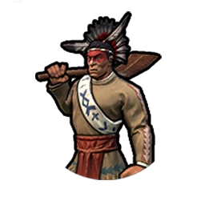
Cree-Spezialeinheit der Antike, die den Späher ersetzt. Starke Aufklärungseinheit. Startet mit einer kostenlosen Beförderung.
Ägypten Kleopatra (Ägyptisch)
.webp)
Iteru
+15 %  Produktion für Bezirke und Wunder, wenn sie neben einem Fluss platziert werden. Erleidet keinen Schaden durch Überschwemmungen.
Produktion für Bezirke und Wunder, wenn sie neben einem Fluss platziert werden. Erleidet keinen Schaden durch Überschwemmungen.
Braut des Mittelmeers
Eure  Handelswege zu anderen Zivilisationen bieten +4
Handelswege zu anderen Zivilisationen bieten +4  Gold für Ägypten. Die
Gold für Ägypten. Die  Handelswege anderer Zivilisationen nach Ägypten bieten ihnen +2
Handelswege anderer Zivilisationen nach Ägypten bieten ihnen +2  Nahrung und +2
Nahrung und +2  Gold für Ägypten. Der Handel mit Verbündeten bietet doppelt so viele Bonus-Allianzpunkte.
Gold für Ägypten. Der Handel mit Verbündeten bietet doppelt so viele Bonus-Allianzpunkte.
Sphinx
Schaltet die Handwerker-Fähigkeit frei, eine Sphinx, die einzigartige Modernisierung Ägyptens, zu bauen.
+1  Glauben und +1
Glauben und +1  Kultur. +2 Anziehungskraft. +2
Kultur. +2 Anziehungskraft. +2  Glauben, wenn neben einem Wunder. +1
Glauben, wenn neben einem Wunder. +1  Kultur beim Bau auf Schwemmland. Weitere
Kultur beim Bau auf Schwemmland. Weitere  Kultur nach der Entdeckung von Naturgeschichte. Gewährt
Kultur nach der Entdeckung von Naturgeschichte. Gewährt  Tourismus nach der Erforschung von Luftfahrt. Kann nicht neben einer anderen Sphinx gebaut werden. Kann nicht auf Schnee oder Schneehügeln gebaut werden.
Tourismus nach der Erforschung von Luftfahrt. Kann nicht neben einer anderen Sphinx gebaut werden. Kann nicht auf Schnee oder Schneehügeln gebaut werden.
Maryannu Wagen - Bogenschütze

Ägyptische Fernkampf-Spezialeinheit der Antike. 4  Fortbewegung bei Start in offenem Gelände.
Fortbewegung bei Start in offenem Gelände.
Ägypten Kleopatra (Ptolemäisch)
.webp)
Iteru
+15 %  Produktion für Bezirke und Wunder, wenn sie neben einem Fluss platziert werden. Erleidet keinen Schaden durch Überschwemmungen.
Produktion für Bezirke und Wunder, wenn sie neben einem Fluss platziert werden. Erleidet keinen Schaden durch Überschwemmungen.
Ankunft Hapis
Ressourcen bei Schwemmland erhalten +1  Nahrung und +1
Nahrung und +1  Kultur. Eigene Schwemmland-Geländefelder gewähren +1 Anziehungskraft bei angrenzenden Geländefeldern statt wie üblich -1.
Kultur. Eigene Schwemmland-Geländefelder gewähren +1 Anziehungskraft bei angrenzenden Geländefeldern statt wie üblich -1.
Sphinx
Schaltet die Handwerker-Fähigkeit frei, eine Sphinx, die einzigartige Modernisierung Ägyptens, zu bauen.
+1  Glauben und +1
Glauben und +1  Kultur. +2 Anziehungskraft. +2
Kultur. +2 Anziehungskraft. +2  Glauben, wenn neben einem Wunder. +1
Glauben, wenn neben einem Wunder. +1  Kultur beim Bau auf Schwemmland. Weitere
Kultur beim Bau auf Schwemmland. Weitere  Kultur nach der Entdeckung von Naturgeschichte. Gewährt
Kultur nach der Entdeckung von Naturgeschichte. Gewährt  Tourismus nach der Erforschung von Luftfahrt. Kann nicht neben einer anderen Sphinx gebaut werden. Kann nicht auf Schnee oder Schneehügeln gebaut werden.
Tourismus nach der Erforschung von Luftfahrt. Kann nicht neben einer anderen Sphinx gebaut werden. Kann nicht auf Schnee oder Schneehügeln gebaut werden.
Maryannu Wagen - Bogenschütze
Ägyptische Fernkampf-Spezialeinheit der Antike. 4  Fortbewegung bei Start in offenem Gelände.
Fortbewegung bei Start in offenem Gelände.
Ägypten Ramses II.

Iteru
+15 %  Produktion für Bezirke und Wunder, wenn sie neben einem Fluss platziert werden. Erleidet keinen Schaden durch Überschwemmungen.
Produktion für Bezirke und Wunder, wenn sie neben einem Fluss platziert werden. Erleidet keinen Schaden durch Überschwemmungen.
Abu Simbel
Erhaltet  Kultur in Höhe von 15% der Baukosten bei Fertigstellung von Gebäuden und 30% bei Fertigstellung von Wundern.
Kultur in Höhe von 15% der Baukosten bei Fertigstellung von Gebäuden und 30% bei Fertigstellung von Wundern.
Sphinx
Schaltet die Handwerker-Fähigkeit frei, eine Sphinx, die einzigartige Modernisierung Ägyptens, zu bauen.
+1  Glauben und +1
Glauben und +1  Kultur. +2 Anziehungskraft. +2
Kultur. +2 Anziehungskraft. +2  Glauben, wenn neben einem Wunder. +1
Glauben, wenn neben einem Wunder. +1  Kultur beim Bau auf Schwemmland. Weitere
Kultur beim Bau auf Schwemmland. Weitere  Kultur nach der Entdeckung von Naturgeschichte. Gewährt
Kultur nach der Entdeckung von Naturgeschichte. Gewährt  Tourismus nach der Erforschung von Luftfahrt. Kann nicht neben einer anderen Sphinx gebaut werden. Kann nicht auf Schnee oder Schneehügeln gebaut werden.
Tourismus nach der Erforschung von Luftfahrt. Kann nicht neben einer anderen Sphinx gebaut werden. Kann nicht auf Schnee oder Schneehügeln gebaut werden.
Maryannu Wagen - Bogenschütze
Ägyptische Fernkampf-Spezialeinheit der Antike. 4  Fortbewegung bei Start in offenem Gelände.
Fortbewegung bei Start in offenem Gelände.
England Eleonore von Aquitanien (England)
.webp)
Werkstatt der Welt
Eisen- und Kohleminen sammeln pro Runde 2 Ressourcen mehr. +100 %  Produktion für Militärpioniere. Militärpioniere erhalten +2 Ladungen. Gebäude, die zusätzliche Erträge gewähren, wenn sie mit
Produktion für Militärpioniere. Militärpioniere erhalten +2 Ladungen. Gebäude, die zusätzliche Erträge gewähren, wenn sie mit  Energie versorgt werden, erhalten +4 für diesen Ertrag. +20 %
Energie versorgt werden, erhalten +4 für diesen Ertrag. +20 %  Produktion für Industriegebiet-Gebäude. Hafengebäude erhöhen strategische Ressourcen-Vorratslager um +10 (auf Standardgeschwindigkeit).
Produktion für Industriegebiet-Gebäude. Hafengebäude erhöhen strategische Ressourcen-Vorratslager um +10 (auf Standardgeschwindigkeit).
Minnehof
Große Werke in Eleonores Städten verursachen -1 Loyalität pro Runde in fremden Städten im Umkreis von 9 Geländefeldern. Eine Stadt, die eine andere Zivilisation wegen Loyalitätsverlust verlässt und derzeit die meiste Loyalität pro Runde von Eleonores Zivilisation erhält, überspringt den Schritt der freien Stadt, um sich direkt dieser Zivilisation anzuschließen.
Royal-Navy-Werft

Ein Bezirk, der ausschließlich England für die Seefahrt zur Verfügung steht. Ersetzt den Hafenbezirk. Kein  Fortbewegungsmalus für das Wassern und Ausschiffen von und zu diesem Geländefeld. Muss an Küste oder See-Geländefeldern neben Land gebaut werden.
Fortbewegungsmalus für das Wassern und Ausschiffen von und zu diesem Geländefeld. Muss an Küste oder See-Geländefeldern neben Land gebaut werden.
+1  Fortbewegung für hier gebaute Marine-Einheiten
Fortbewegung für hier gebaute Marine-Einheiten
+2  Gold und +4 Loyalität pro Runde bei Errichtung auf einem fremden Kontinent. Kann nicht an einem Riff gebaut werden.
Gold und +4 Loyalität pro Runde bei Errichtung auf einem fremden Kontinent. Kann nicht an einem Riff gebaut werden.
Sea Dog

Englische Spezial-Marineeinheit der Renaissance, die den Freibeuter ersetzt. Kann feindliche Schiffe gefangen nehmen. Kann auf Distanz nur von anderen Marine-Räubern gesichtet werden. Deckt Marine-Räuber in Sichtweite auf.
England Elisabeth I.

Werkstatt der Welt
Eisen- und Kohleminen sammeln pro Runde 2 Ressourcen mehr. +100 %  Produktion für Militärpioniere. Militärpioniere erhalten +2 Ladungen. Gebäude, die zusätzliche Erträge gewähren, wenn sie mit
Produktion für Militärpioniere. Militärpioniere erhalten +2 Ladungen. Gebäude, die zusätzliche Erträge gewähren, wenn sie mit  Energie versorgt werden, erhalten +4 für diesen Ertrag. +20 %
Energie versorgt werden, erhalten +4 für diesen Ertrag. +20 %  Produktion für Industriegebiet-Gebäude. Hafengebäude erhöhen strategische Ressourcen-Vorratslager um +10 (auf Standardgeschwindigkeit).
Produktion für Industriegebiet-Gebäude. Hafengebäude erhöhen strategische Ressourcen-Vorratslager um +10 (auf Standardgeschwindigkeit).
Drakes Vermächtnis
Englands  Handelswegkapazität wird um 2 erhöht, nachdem Ihr Euren ersten
Handelswegkapazität wird um 2 erhöht, nachdem Ihr Euren ersten  Großen Admiral erhaltet.
Großen Admiral erhaltet.  Handelswege zu Stadtstaaten gewähren +3
Handelswege zu Stadtstaaten gewähren +3  Gold pro Spezialbezirk in der Ursprungsstadt. +100 % Erträge beim Plündern von
Gold pro Spezialbezirk in der Ursprungsstadt. +100 % Erträge beim Plündern von  Handelswegen mit Marineeinheiten.
Handelswegen mit Marineeinheiten.
Royal-Navy-Werft
Ein Bezirk, der ausschließlich England für die Seefahrt zur Verfügung steht. Ersetzt den Hafenbezirk. Kein  Fortbewegungsmalus für das Wassern und Ausschiffen von und zu diesem Geländefeld. Muss an Küste oder See-Geländefeldern neben Land gebaut werden.
Fortbewegungsmalus für das Wassern und Ausschiffen von und zu diesem Geländefeld. Muss an Küste oder See-Geländefeldern neben Land gebaut werden.
+1  Fortbewegung für hier gebaute Marine-Einheiten
Fortbewegung für hier gebaute Marine-Einheiten
+2  Gold und +4 Loyalität pro Runde bei Errichtung auf einem fremden Kontinent. Kann nicht an einem Riff gebaut werden.
Gold und +4 Loyalität pro Runde bei Errichtung auf einem fremden Kontinent. Kann nicht an einem Riff gebaut werden.
Sea Dog
Englische Spezial-Marineeinheit der Renaissance, die den Freibeuter ersetzt. Kann feindliche Schiffe gefangen nehmen. Kann auf Distanz nur von anderen Marine-Räubern gesichtet werden. Deckt Marine-Räuber in Sichtweite auf.
England Victoria (Imperiales Zeitalter)
.webp)
Werkstatt der Welt
Eisen- und Kohleminen sammeln pro Runde 2 Ressourcen mehr. +100 %  Produktion für Militärpioniere. Militärpioniere erhalten +2 Ladungen. Gebäude, die zusätzliche Erträge gewähren, wenn sie mit
Produktion für Militärpioniere. Militärpioniere erhalten +2 Ladungen. Gebäude, die zusätzliche Erträge gewähren, wenn sie mit  Energie versorgt werden, erhalten +4 für diesen Ertrag. +20 %
Energie versorgt werden, erhalten +4 für diesen Ertrag. +20 %  Produktion für Industriegebiet-Gebäude. Hafengebäude erhöhen strategische Ressourcen-Vorratslager um +10 (auf Standardgeschwindigkeit).
Produktion für Industriegebiet-Gebäude. Hafengebäude erhöhen strategische Ressourcen-Vorratslager um +10 (auf Standardgeschwindigkeit).
Pax Britannica
Jedes Mal, wenn Ihr Eure erste Stadt auf einem anderen Kontinent als Eurem Heimatkontinent gegründet habt, erhaltet Ihr eine kostenlose Nahkampfeinheit und +1  Handelswegkapazität. Der Bau einer Royal-Navy-Werft gewährt Euch ein Exemplar der stärksten Marineeinheit, die Ihr bauen könnt. Erhaltet nach der Erforschung der Militärwissenschaft die einzigartige Einheit Rotrock.
Handelswegkapazität. Der Bau einer Royal-Navy-Werft gewährt Euch ein Exemplar der stärksten Marineeinheit, die Ihr bauen könnt. Erhaltet nach der Erforschung der Militärwissenschaft die einzigartige Einheit Rotrock.
Royal-Navy-Werft
Ein Bezirk, der ausschließlich England für die Seefahrt zur Verfügung steht. Ersetzt den Hafenbezirk. Kein  Fortbewegungsmalus für das Wassern und Ausschiffen von und zu diesem Geländefeld. Muss an Küste oder See-Geländefeldern neben Land gebaut werden.
Fortbewegungsmalus für das Wassern und Ausschiffen von und zu diesem Geländefeld. Muss an Küste oder See-Geländefeldern neben Land gebaut werden.
+1  Fortbewegung für hier gebaute Marine-Einheiten
Fortbewegung für hier gebaute Marine-Einheiten
+2  Gold und +4 Loyalität pro Runde bei Errichtung auf einem fremden Kontinent. Kann nicht an einem Riff gebaut werden.
Gold und +4 Loyalität pro Runde bei Errichtung auf einem fremden Kontinent. Kann nicht an einem Riff gebaut werden.
Rotrock

Englische Spezialeinheit des Industriezeitalters mit Victoria als Oberhaupt, die den Linieninfanteristen ersetzt. +10  Kampfstärke auf anderen Kontinenten als dem Hauptstadt-Kontinent. Keine Ausschiffungs-Kosten.
Kampfstärke auf anderen Kontinenten als dem Hauptstadt-Kontinent. Keine Ausschiffungs-Kosten.
Sea Dog
Englische Spezial-Marineeinheit der Renaissance, die den Freibeuter ersetzt. Kann feindliche Schiffe gefangen nehmen. Kann auf Distanz nur von anderen Marine-Räubern gesichtet werden. Deckt Marine-Räuber in Sichtweite auf.
England Victoria (Dampfzeitalter)
.webp)
Werkstatt der Welt
Eisen- und Kohleminen sammeln pro Runde 2 Ressourcen mehr. +100 %  Produktion für Militärpioniere. Militärpioniere erhalten +2 Ladungen. Gebäude, die zusätzliche Erträge gewähren, wenn sie mit
Produktion für Militärpioniere. Militärpioniere erhalten +2 Ladungen. Gebäude, die zusätzliche Erträge gewähren, wenn sie mit  Energie versorgt werden, erhalten +4 für diesen Ertrag. +20 %
Energie versorgt werden, erhalten +4 für diesen Ertrag. +20 %  Produktion für Industriegebiet-Gebäude. Hafengebäude erhöhen strategische Ressourcen-Vorratslager um +10 (auf Standardgeschwindigkeit).
Produktion für Industriegebiet-Gebäude. Hafengebäude erhöhen strategische Ressourcen-Vorratslager um +10 (auf Standardgeschwindigkeit).
Dampfzeitalter
+10 %  Produktion in Städten pro Industriegebiet-Gebäude in der betreffenden Stadt. +2
Produktion in Städten pro Industriegebiet-Gebäude in der betreffenden Stadt. +2  Produktion für alle strategischen Ressourcen.
Produktion für alle strategischen Ressourcen.
Royal-Navy-Werft
Ein Bezirk, der ausschließlich England für die Seefahrt zur Verfügung steht. Ersetzt den Hafenbezirk. Kein  Fortbewegungsmalus für das Wassern und Ausschiffen von und zu diesem Geländefeld. Muss an Küste oder See-Geländefeldern neben Land gebaut werden.
Fortbewegungsmalus für das Wassern und Ausschiffen von und zu diesem Geländefeld. Muss an Küste oder See-Geländefeldern neben Land gebaut werden.
+1  Fortbewegung für hier gebaute Marine-Einheiten
Fortbewegung für hier gebaute Marine-Einheiten
+2  Gold und +4 Loyalität pro Runde bei Errichtung auf einem fremden Kontinent. Kann nicht an einem Riff gebaut werden.
Gold und +4 Loyalität pro Runde bei Errichtung auf einem fremden Kontinent. Kann nicht an einem Riff gebaut werden.
Sea Dog
Englische Spezial-Marineeinheit der Renaissance, die den Freibeuter ersetzt. Kann feindliche Schiffe gefangen nehmen. Kann auf Distanz nur von anderen Marine-Räubern gesichtet werden. Deckt Marine-Räuber in Sichtweite auf.
Äthiopien Menelik II.

Aksumitisches Vermächtnis
Äthiopiens internationale Handelswege gewähren +0,5  Glauben pro Ressource am Ausgangsort. Modernisierte Ressourcen liefern +1
Glauben pro Ressource am Ausgangsort. Modernisierte Ressourcen liefern +1  Glauben pro Kopie im Besitz der Stadt. Kauf von Archäologischen Museen und Archäologen mit
Glauben pro Kopie im Besitz der Stadt. Kauf von Archäologischen Museen und Archäologen mit  Glauben möglich.
Glauben möglich.
Ministerrat
Erhaltet  Wissenschaft und
Wissenschaft und  Kultur in Höhe von 15 % Eurer
Kultur in Höhe von 15 % Eurer  Glaubensgenerierung in Städten, die auf Hügeln gegründet wurden. Einheiten erhalten +4
Glaubensgenerierung in Städten, die auf Hügeln gegründet wurden. Einheiten erhalten +4  Kampfstärke auf Hügeln.
Kampfstärke auf Hügeln.
Felskirche

Schaltet die Handwerker-Fähigkeit frei, eine Felskirche zu bauen, die einzigartig für Äthiopien ist.
+1  Glauben. +1
Glauben. +1  Glauben für jedes angrenzende Berg- und Hügel-Geländefeld. Gewährt nach der Erforschung der Luftfahrt
Glauben für jedes angrenzende Berg- und Hügel-Geländefeld. Gewährt nach der Erforschung der Luftfahrt  Tourismus durch
Tourismus durch  Glauben. +1 Anziehungskraft. Kann nur von Naturkatastrophen geplündert (niemals zerstört) werden. Kann nur auf Hügeln oder Vulkanerde gebaut werden und darf nicht an eine weitere Felskirche angrenzen.
Glauben. +1 Anziehungskraft. Kann nur von Naturkatastrophen geplündert (niemals zerstört) werden. Kann nur auf Hügeln oder Vulkanerde gebaut werden und darf nicht an eine weitere Felskirche angrenzen.
Oromo-Kavallerie

Äthiopische Leichte Kavallerie-Spezialeinheit des Mittelalters. Stärker und hat bessere Sicht als der Renner, den sie ersetzt. Erhält keinen  Fortbewegungsmalus für die Fortbewegung auf Hügeln.
Fortbewegungsmalus für die Fortbewegung auf Hügeln.
Frankreich Katharina von Medici (Schwarze Königin)
.webp)
Grand Tour
+20 %  Produktion für Wunder des Mittelalters, der Renaissance und des Industriezeitalters. +100 %
Produktion für Wunder des Mittelalters, der Renaissance und des Industriezeitalters. +100 %  Tourismus durch Wunder aus beliebigen Zeitaltern.
Tourismus durch Wunder aus beliebigen Zeitaltern.
Katharinas Flugschwadron
Hat 1 Stufe  diplomatische Sichtbarkeit mehr als normal bei jeder Zivilisation, die sie getroffen hat. Erhält mit der Schloss-Technologie einen kostenlosen Spion (und die Kapazität für einen zusätzlichen Spion). Alle Spione starten als Agenten mit einer kostenlosen Beförderung.
diplomatische Sichtbarkeit mehr als normal bei jeder Zivilisation, die sie getroffen hat. Erhält mit der Schloss-Technologie einen kostenlosen Spion (und die Kapazität für einen zusätzlichen Spion). Alle Spione starten als Agenten mit einer kostenlosen Beförderung.
Chateau
Schaltet die Handwerker-Fähigkeit frei, ein Chateau, die einzigartige Modernisierung Frankreichs, zu bauen.
+2  Kultur und +1
Kultur und +1  Gold. +1 Anziehungskraft. +1
Gold. +1 Anziehungskraft. +1  Kultur für jedes benachbarte Wunder (+2 nach Erforschung der Luftfahrt). +2
Kultur für jedes benachbarte Wunder (+2 nach Erforschung der Luftfahrt). +2  Gold auf einem Geländefeld mit Flussanteil. Gewährt
Gold auf einem Geländefeld mit Flussanteil. Gewährt  Tourismus durch
Tourismus durch  Kultur nach der Erforschung von Luftfahrt. Kann nur angrenzend an eine Bonus-Ressource oder ein Luxusgut gebaut werden. Kann nicht an ein weiteres Chateau angrenzen
Kultur nach der Erforschung von Luftfahrt. Kann nur angrenzend an eine Bonus-Ressource oder ein Luxusgut gebaut werden. Kann nicht an ein weiteres Chateau angrenzen
Imperiale Garde

Französische Spezial-Nahkampfeinheit des Industriezeitalters, die den Linieninfanteristen ersetzt. +10  Kampfstärke auf dem Kontinent Eurer Hauptstadt.
Kampfstärke auf dem Kontinent Eurer Hauptstadt.  Großer-General-Punkte für das Eliminieren von Einheiten.
Großer-General-Punkte für das Eliminieren von Einheiten.
Frankreich Katharina von Medici (Erhabenheit)
.webp)
Grand Tour
+20 %  Produktion für Wunder des Mittelalters, der Renaissance und des Industriezeitalters. +100 %
Produktion für Wunder des Mittelalters, der Renaissance und des Industriezeitalters. +100 %  Tourismus durch Wunder aus beliebigen Zeitaltern.
Tourismus durch Wunder aus beliebigen Zeitaltern.
Katharinas Erhabenheit
Modernisierte Luxus-Ressourcen, die an Theaterplatz-Bezirke oder Chateaus angrenzen, erhalten +2  Kultur. Kann das Projekt 'Hoffest' in beliebigen Städten mit einem Theaterplatz-Bezirk beginnen.
Kultur. Kann das Projekt 'Hoffest' in beliebigen Städten mit einem Theaterplatz-Bezirk beginnen.
Chateau
Schaltet die Handwerker-Fähigkeit frei, ein Chateau, die einzigartige Modernisierung Frankreichs, zu bauen.
+2  Kultur und +1
Kultur und +1  Gold. +1 Anziehungskraft. +1
Gold. +1 Anziehungskraft. +1  Kultur für jedes benachbarte Wunder (+2 nach Erforschung der Luftfahrt). +2
Kultur für jedes benachbarte Wunder (+2 nach Erforschung der Luftfahrt). +2  Gold auf einem Geländefeld mit Flussanteil. Gewährt
Gold auf einem Geländefeld mit Flussanteil. Gewährt  Tourismus durch
Tourismus durch  Kultur nach der Erforschung von Luftfahrt. Kann nur angrenzend an eine Bonus-Ressource oder ein Luxusgut gebaut werden. Kann nicht an ein weiteres Chateau angrenzen
Kultur nach der Erforschung von Luftfahrt. Kann nur angrenzend an eine Bonus-Ressource oder ein Luxusgut gebaut werden. Kann nicht an ein weiteres Chateau angrenzen
Imperiale Garde
Französische Spezial-Nahkampfeinheit des Industriezeitalters, die den Linieninfanteristen ersetzt. +10  Kampfstärke auf dem Kontinent Eurer Hauptstadt.
Kampfstärke auf dem Kontinent Eurer Hauptstadt.  Großer-General-Punkte für das Eliminieren von Einheiten.
Großer-General-Punkte für das Eliminieren von Einheiten.
Frankreich Eleonore von Aquitanien (Frankreich)
.webp)
Grand Tour
+20 %  Produktion für Wunder des Mittelalters, der Renaissance und des Industriezeitalters. +100 %
Produktion für Wunder des Mittelalters, der Renaissance und des Industriezeitalters. +100 %  Tourismus durch Wunder aus beliebigen Zeitaltern.
Tourismus durch Wunder aus beliebigen Zeitaltern.
Minnehof
Große Werke in Eleonores Städten verursachen -1 Loyalität pro Runde in fremden Städten im Umkreis von 9 Geländefeldern. Eine Stadt, die eine andere Zivilisation wegen Loyalitätsverlust verlässt und derzeit die meiste Loyalität pro Runde von Eleonores Zivilisation erhält, überspringt den Schritt der freien Stadt, um sich direkt dieser Zivilisation anzuschließen.
Chateau
Schaltet die Handwerker-Fähigkeit frei, ein Chateau, die einzigartige Modernisierung Frankreichs, zu bauen.
+2  Kultur und +1
Kultur und +1  Gold. +1 Anziehungskraft. +1
Gold. +1 Anziehungskraft. +1  Kultur für jedes benachbarte Wunder (+2 nach Erforschung der Luftfahrt). +2
Kultur für jedes benachbarte Wunder (+2 nach Erforschung der Luftfahrt). +2  Gold auf einem Geländefeld mit Flussanteil. Gewährt
Gold auf einem Geländefeld mit Flussanteil. Gewährt  Tourismus durch
Tourismus durch  Kultur nach der Erforschung von Luftfahrt. Kann nur angrenzend an eine Bonus-Ressource oder ein Luxusgut gebaut werden. Kann nicht an ein weiteres Chateau angrenzen
Kultur nach der Erforschung von Luftfahrt. Kann nur angrenzend an eine Bonus-Ressource oder ein Luxusgut gebaut werden. Kann nicht an ein weiteres Chateau angrenzen
Imperiale Garde
Französische Spezial-Nahkampfeinheit des Industriezeitalters, die den Linieninfanteristen ersetzt. +10  Kampfstärke auf dem Kontinent Eurer Hauptstadt.
Kampfstärke auf dem Kontinent Eurer Hauptstadt.  Großer-General-Punkte für das Eliminieren von Einheiten.
Großer-General-Punkte für das Eliminieren von Einheiten.
Gallien Ambiorix

Hallstattkultur
Minen gewähren allen Bezirken einen kleinen Nachbarschaftsbonus, erzeugen einen Kulturschock auf herrenlosem Gebiet und erhalten +1  Kultur. Spezialbezirke erhalten keinen kleinen Nachbarschaftsbonus, wenn sie an einen anderen Bezirk angrenzen, und sie dürfen nicht an das Stadtzentrum angrenzen.
Kultur. Spezialbezirke erhalten keinen kleinen Nachbarschaftsbonus, wenn sie an einen anderen Bezirk angrenzen, und sie dürfen nicht an das Stadtzentrum angrenzen.
König der Eburonen
Eure Zivilisation erhält  Kultur in Höhe von 20 % der Kosten der Einheit, wenn eine nicht zivile Einheit ausgebildet wird. Nahkampf-, Kavallerie-Abwehr- und Fernkampfeinheiten erhalten +2
Kultur in Höhe von 20 % der Kosten der Einheit, wenn eine nicht zivile Einheit ausgebildet wird. Nahkampf-, Kavallerie-Abwehr- und Fernkampfeinheiten erhalten +2  Kampfstärke für jede angrenzende Kampfeinheit.
Kampfstärke für jede angrenzende Kampfeinheit.
Oppidum

Ein Bezirk, der ausschließlich Gallien zur Verfügung steht und günstiger sowie früher verfügbar ist als der Bezirk, den er ersetzt, das Industriegebiet. Der Oppidum-Bezirk kann verteidigt werden und verfügt über einen Fernangriff. Mit dem Bau des ersten Oppidums wird die Lehrlingstechnologie freigeschaltet.
+2 Nachbarschaftsbonus auf die  Produktion durch Steinbrüche und strategische Ressourcen.
Produktion durch Steinbrüche und strategische Ressourcen.
Gaesate
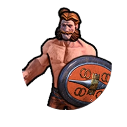
Gallische Spezialeinheit der Antike, die den Krieger ersetzt. Diese Einheit ist teurer und erhält +10  Kampfstärke beim Kampf gegen Einheiten mit höherer Grund-Kampfstärke. +5
Kampfstärke beim Kampf gegen Einheiten mit höherer Grund-Kampfstärke. +5  Kampfstärke gegen Bezirk-Verteidigungen.
Kampfstärke gegen Bezirk-Verteidigungen.
Georgien Tamar

Stärke durch Einigkeit
Bei einer Widmung zu Beginn eines Goldenen oder Heldenzeitalters erhaltet Ihr denselben Bonus zur Verbesserung der Zeitalterpunkte wie in einem Normalen Zeitalter zusätzlich zum anderen Bonus. +50 %  Produktion für Verteidigungsgebäude.
Produktion für Verteidigungsgebäude.
Ruhm der Welt, Königreich und Glaube
Kampfsiege bringen  Glauben in Höhe von 50 % der
Glauben in Höhe von 50 % der  Kampfstärke der besiegten Einheit (auf Standardgeschwindigkeit). Jeder
Kampfstärke der besiegten Einheit (auf Standardgeschwindigkeit). Jeder  Gesandte, den Ihr in einen Stadtstaat mit Eurer vorherrschenden Religion entsendet, zählt als zwei
Gesandte, den Ihr in einen Stadtstaat mit Eurer vorherrschenden Religion entsendet, zählt als zwei  Gesandte. (Muss eine Mehrheitsreligion haben.)
Gesandte. (Muss eine Mehrheitsreligion haben.)
Tsikhe
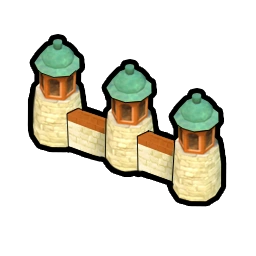
Einzigartiges Gebäude von Georgien. Niedrigere  Produktionskosten und stärkere äußere Verteidigungen als Renaissance-Mauern. Bringt +3
Produktionskosten und stärkere äußere Verteidigungen als Renaissance-Mauern. Bringt +3  Tourismus nach Erreichen der Ausrichtung 'Naturschutz'. Bringt +4
Tourismus nach Erreichen der Ausrichtung 'Naturschutz'. Bringt +4  Glauben. In einem Goldenen Zeitalter sind
Glauben. In einem Goldenen Zeitalter sind  Tourismus und
Tourismus und  Glauben +100 %.
Glauben +100 %.
Chewsure
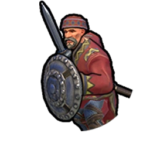
Georgische Spezialeinheit des Mittelalters, die den Landsknecht ersetzt. +7  Kampfstärke beim Kampf in Hügel-Gelände. Kein
Kampfstärke beim Kampf in Hügel-Gelände. Kein  Fortbewegungsmalus in Hügel-Gelände.
Fortbewegungsmalus in Hügel-Gelände.
Deutschland Friedrich Barbarossa

Freie und Reichsstädte
Jede Stadt kann einen Bezirk mehr als normal bauen (und dabei das normale Limit auf  Bevölkerungsbasis überschreiten).
Bevölkerungsbasis überschreiten).
Kaiser des Heiligen Römischen Reiches
Zusätzlicher Militärregierung-Platz. +7  Kampfstärke beim Angriff auf Stadtstaaten.
Kampfstärke beim Angriff auf Stadtstaaten.
Hanse

Ein ausschließlich Deutschland zur Verfügung stehender Bezirk für industrielle Aktivitäten. Ersetzt den Industriegebiet-Bezirk und ist günstiger im Bau.
+ 2 Produktionsbonus für jeden angrenzenden Bezirk des Typs Handelszentrum, Aquädukt, Kanal und Staudamm. +1
Produktionsbonus für jeden angrenzenden Bezirk des Typs Handelszentrum, Aquädukt, Kanal und Staudamm. +1  Produktionsbonus für alle angrenzenden Ressourcen. +1
Produktionsbonus für alle angrenzenden Ressourcen. +1  Produktionsbonus für jeweils 2 angrenzende Bezirke.
Produktionsbonus für jeweils 2 angrenzende Bezirke.
U-Boot
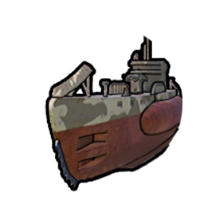
Deutsche Spezial-Marineeinheit der Moderne, die das Unterseeboot ersetzt. Günstiger in der Produktion, +1 Sicht und +10  Kampfstärke auf Ozean-Geländefeldern. Kann andere getarnte Einheiten aufdecken.
Kampfstärke auf Ozean-Geländefeldern. Kann andere getarnte Einheiten aufdecken.
Deutschland Ludwig II.

Freie und Reichsstädte
Jede Stadt kann einen Bezirk mehr als normal bauen (und dabei das normale Limit auf  Bevölkerungsbasis überschreiten).
Bevölkerungsbasis überschreiten).
Schwanenkönig
Wunder, selbst nicht fertiggestellte, erhalten +2  Kultur für alle angrenzenden Bezirke. Diese
Kultur für alle angrenzenden Bezirke. Diese  Kultur wird in den Stadterträgen angezeigt. Alle
Kultur wird in den Stadterträgen angezeigt. Alle  Kulturnachbarschaften gewähren nach der Erforschung von Burgen
Kulturnachbarschaften gewähren nach der Erforschung von Burgen  Tourismus.
Tourismus.
Hanse
Ein ausschließlich Deutschland zur Verfügung stehender Bezirk für industrielle Aktivitäten. Ersetzt den Industriegebiet-Bezirk und ist günstiger im Bau.
+ 2 Produktionsbonus für jeden angrenzenden Bezirk des Typs Handelszentrum, Aquädukt, Kanal und Staudamm. +1
Produktionsbonus für jeden angrenzenden Bezirk des Typs Handelszentrum, Aquädukt, Kanal und Staudamm. +1  Produktionsbonus für alle angrenzenden Ressourcen. +1
Produktionsbonus für alle angrenzenden Ressourcen. +1  Produktionsbonus für jeweils 2 angrenzende Bezirke.
Produktionsbonus für jeweils 2 angrenzende Bezirke.
U-Boot
Deutsche Spezial-Marineeinheit der Moderne, die das Unterseeboot ersetzt. Günstiger in der Produktion, +1 Sicht und +10  Kampfstärke auf Ozean-Geländefeldern. Kann andere getarnte Einheiten aufdecken.
Kampfstärke auf Ozean-Geländefeldern. Kann andere getarnte Einheiten aufdecken.
Großkolumbien Simón Bolívar

Ejército Patriota
+1  Fortbewegung für alle Einheiten. Die Beförderung einer Einheit beendet nicht ihre Runde.
Fortbewegung für alle Einheiten. Die Beförderung einer Einheit beendet nicht ihre Runde.
Campaña Admirable
Verdient einen Comandante General, wenn im Spiel ein neues Zeitalter beginnt.
Hacienda
Schaltet die Handwerker-Fähigkeit frei, eine Hacienda zu bauen, die einzigartig für Großkolumbien ist.
+2  Gold, +1
Gold, +1  Produktion und +0,5
Produktion und +0,5  Wohnraum. +1
Wohnraum. +1  Nahrung für je zwei angrenzende Plantagen (wird für jede Plantage mit Normbauteilen erhöht). Plantagen und Haciendas erhalten +1
Nahrung für je zwei angrenzende Plantagen (wird für jede Plantage mit Normbauteilen erhöht). Plantagen und Haciendas erhalten +1  Produktion für je zwei angrenzende Haciendas (wird für jede Hacienda mit Schneller Einsatz erhöht). Kann nur auf Ebenen, Ebenen-Hügeln, Grasland und Grasland-Hügeln gebaut werden.
Produktion für je zwei angrenzende Haciendas (wird für jede Hacienda mit Schneller Einsatz erhöht). Kann nur auf Ebenen, Ebenen-Hügeln, Grasland und Grasland-Hügeln gebaut werden.
Llanero
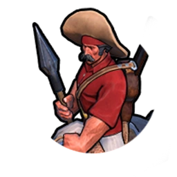
Großkolumbianische Spezialeinheit des Industriezeitalters, welche die Kavallerie ersetzt. Niedrige Unterhaltskosten. +2  Kampfstärke für jeden angrenzenden Llanero. Wird in Reichweite eines Comandante General, der seine Ruhestand-Fähigkeit aktiviert, vollständig geheilt.
Kampfstärke für jeden angrenzenden Llanero. Wird in Reichweite eines Comandante General, der seine Ruhestand-Fähigkeit aktiviert, vollständig geheilt.
Comandante General

Eine besondere Art Großer Persönlichkeit, die nur Simón Bolívar zur Verfügung steht. Jeder hat einzigartige Fähigkeiten, darunter einen passiven Effekt und einen 'Zur Ruhe setzen'-Effekt.
Griechenland Gorgo

Platos Republik
Ein zusätzlicher Joker-Politikplatz in jeder Regierung.
Thermopylae
Kampfsiege bringen  Kultur in Höhe von 50% der
Kultur in Höhe von 50% der  Kampfstärke der besiegten Einheit (bei Standardgeschwindigkeit). +1
Kampfstärke der besiegten Einheit (bei Standardgeschwindigkeit). +1  Kampfstärke für jede eingesetzte Militärpolitik.
Kampfstärke für jede eingesetzte Militärpolitik.
Akropolis

Ein ausschließlich Griechenland zur Verfügung stehender Bezirk für Kulturstätten. Ersetzt den Theaterplatz-Bezirk und ist günstiger im Bau. Gewährt bei Fertigstellung 1  Gesandten.
Gesandten.
+1  Kulturbonus für jeden angrenzenden Bezirk sowie +1
Kulturbonus für jeden angrenzenden Bezirk sowie +1  Kulturbonus für angrenzendes Stadtzentrum. +2
Kulturbonus für angrenzendes Stadtzentrum. +2  Kulturbonus für alle angrenzenden Wunder, den Unterhaltungskomplex und Wasserpark. Kann nur auf Hügeln errichtet werden.
Kulturbonus für alle angrenzenden Wunder, den Unterhaltungskomplex und Wasserpark. Kann nur auf Hügeln errichtet werden.
Hoplit
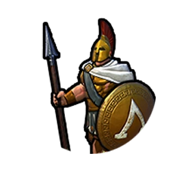
Einzigartige griechische Einheit der Kavallerie-Abwehr der Antike, die den Speerkämpfer ersetzt. +10  Kampfstärke, wenn mindestens eine Hopliteneinheit angrenzt.
Kampfstärke, wenn mindestens eine Hopliteneinheit angrenzt.
Griechenland Perikles

Platos Republik
Ein zusätzlicher Joker-Politikplatz in jeder Regierung.
Umgeben von Ruhm
+5%  Kultur pro Stadtstaat,
Kultur pro Stadtstaat,
in dem Ihr Suzerän seid.
Akropolis
Ein ausschließlich Griechenland zur Verfügung stehender Bezirk für Kulturstätten. Ersetzt den Theaterplatz-Bezirk und ist günstiger im Bau. Gewährt bei Fertigstellung 1  Gesandten.
Gesandten.
+1  Kulturbonus für jeden angrenzenden Bezirk sowie +1
Kulturbonus für jeden angrenzenden Bezirk sowie +1  Kulturbonus für angrenzendes Stadtzentrum. +2
Kulturbonus für angrenzendes Stadtzentrum. +2  Kulturbonus für alle angrenzenden Wunder, den Unterhaltungskomplex und Wasserpark. Kann nur auf Hügeln errichtet werden.
Kulturbonus für alle angrenzenden Wunder, den Unterhaltungskomplex und Wasserpark. Kann nur auf Hügeln errichtet werden.
Hoplit
Einzigartige griechische Einheit der Kavallerie-Abwehr der Antike, die den Speerkämpfer ersetzt. +10  Kampfstärke, wenn mindestens eine Hopliteneinheit angrenzt.
Kampfstärke, wenn mindestens eine Hopliteneinheit angrenzt.
Ungarn Matthias Corvinus

Donauperle
+50 %  Produktion bei Bezirken und Gebäuden, die von einem Stadtzentrum über einen Fluss gebaut sind.
Produktion bei Bezirken und Gebäuden, die von einem Stadtzentrum über einen Fluss gebaut sind.
Rabenkönig
Ausgehobene Einheiten erlangen eine Fähigkeit, die ihnen +2  Fortbewegung und +5
Fortbewegung und +5  Kampfstärke verleiht. Es kostet 75% weniger
Kampfstärke verleiht. Es kostet 75% weniger  Gold und Ressourcen, ausgehobene Einheiten zu verbessern. Wenn Ihr Truppen in einem Stadtstaat aushebt, erhaltet Ihr 2
Gold und Ressourcen, ausgehobene Einheiten zu verbessern. Wenn Ihr Truppen in einem Stadtstaat aushebt, erhaltet Ihr 2  Gesandte in diesem Stadtstaat. Erlangt die einzigartige Einheit Schwarze Armee, wenn die Schloss-Technologie erforscht ist.
Gesandte in diesem Stadtstaat. Erlangt die einzigartige Einheit Schwarze Armee, wenn die Schloss-Technologie erforscht ist.
Thermalbad

Einzigartiges Gebäude von Ungarn. +2  Annehmlichkeiten und +2
Annehmlichkeiten und +2  Produktion erstrecken sich auf jedes Stadtzentrum innerhalb von 6 Geländefeldern. Diese Bonusse werden einmalig pro Stadt angewendet und mehrere Gebäude dieses Typs innerhalb von 6 Geländefeldern innerhalb eines Stadtzentrums bieten keine zusätzlichen Bonusse.
Produktion erstrecken sich auf jedes Stadtzentrum innerhalb von 6 Geländefeldern. Diese Bonusse werden einmalig pro Stadt angewendet und mehrere Gebäude dieses Typs innerhalb von 6 Geländefeldern innerhalb eines Stadtzentrums bieten keine zusätzlichen Bonusse.
Diese Stadt erhält +3  Tourismus und +2 zusätzliche
Tourismus und +2 zusätzliche  Annehmlichkeiten, wenn es mindestens einen geothermischen Riss innerhalb der Stadtgrenzen gibt.
Annehmlichkeiten, wenn es mindestens einen geothermischen Riss innerhalb der Stadtgrenzen gibt.
Schwarze Armee

Ungarische einzigartige Einheit des Mittelalters, die den Renner ersetzt. +3  Kampfstärke für jede angrenzende ausgehobene Einheit.
Kampfstärke für jede angrenzende ausgehobene Einheit.
Husar
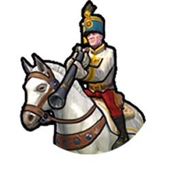
Ungarische einzigartige Einheit des Industriezeitalters, die die Kavallerie ersetzt. +3  Kampfstärke für jede aktive Allianz.
Kampfstärke für jede aktive Allianz.
Inka Pachacútec

Mita
Bürger können Berg-Geländefelder bewirtschaften. Berg-Geländefelder bieten +2  Produktion sowie zusätzlich +1
Produktion sowie zusätzlich +1  Produktion, wenn das Spiel das Industriezeitalter erreicht. +1
Produktion, wenn das Spiel das Industriezeitalter erreicht. +1  Nahrung bei Berg-Geländefeldern für jedes angrenzende Terrassenfeld.
Nahrung bei Berg-Geländefeldern für jedes angrenzende Terrassenfeld.
Qhapaq Ñan
Inländische  Handelswege erlangen +1
Handelswege erlangen +1  Nahrung für jedes Berg-Geländefeld in der Ursprungsstadt. Ihr erhaltet die Modernisierung Qhapaq Ñan, wenn die Ausrichtung Außenhandel entdeckt wird.
Nahrung für jedes Berg-Geländefeld in der Ursprungsstadt. Ihr erhaltet die Modernisierung Qhapaq Ñan, wenn die Ausrichtung Außenhandel entdeckt wird.
Qhapaq Ñan

Schaltet die Handwerker-Fähigkeit frei, eine Qhapaq Ñan, die einzigartige Modernisierung Pachacútecs, zu bauen.
Dient als Bewegungsportal auf einem Gebirge, durch das Einheiten für 2  Fortbewegungspunkte hindurchgehen können, um an einem anderen Portal hinauszutreten. Kreuzende
Fortbewegungspunkte hindurchgehen können, um an einem anderen Portal hinauszutreten. Kreuzende  Handelswege können das erhaltene
Handelswege können das erhaltene  Gold von Bezirken an ihrem Zielort multiplizieren. Kann nur auf einem angrenzenden Berg-Geländefeld gebaut werden. Kann nicht geplündert oder entfernt werden.
Gold von Bezirken an ihrem Zielort multiplizieren. Kann nur auf einem angrenzenden Berg-Geländefeld gebaut werden. Kann nicht geplündert oder entfernt werden.
Terrassenfeld

Schaltet die Handwerker-Fähigkeit frei, ein Terrassenfeld, die einzigartige Modernisierung des Inkareichs, zu bauen.
+1  Nahrung. Bringt +1
Nahrung. Bringt +1  Wohnraum. +1
Wohnraum. +1  Nahrung für jedes angrenzende Berg-Geländefeld. Gewährt +2
Nahrung für jedes angrenzende Berg-Geländefeld. Gewährt +2  Produktion für jeden angrenzenden Aquädukt-Bezirk. Erhaltet +1
Produktion für jeden angrenzenden Aquädukt-Bezirk. Erhaltet +1  Produktion bei angrenzendem Süßwasser, wenn kein Aquädukt-Bezirk angrenzt. Zusätzliche
Produktion bei angrenzendem Süßwasser, wenn kein Aquädukt-Bezirk angrenzt. Zusätzliche  Nahrung für Euren Fortschritt beim Ausrichtungs- und Technologiebaum, wenn weitere Terrassenfelder angrenzen. Kann auf Grasland-Hügeln, Ebenen-Hügeln und Wüstenhügeln platziert werden.
Nahrung für Euren Fortschritt beim Ausrichtungs- und Technologiebaum, wenn weitere Terrassenfelder angrenzen. Kann auf Grasland-Hügeln, Ebenen-Hügeln und Wüstenhügeln platziert werden.
Warak’aq
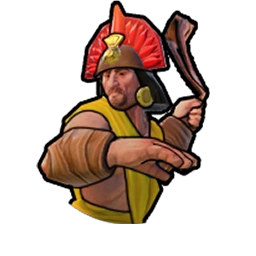
Einzigartige Einheit der Inka des Mittelalters, die den Plänkler ersetzt. Stärker im Fernkampf als der Plänkler und +1 zusätzlicher Angriff pro Runde.
Indien Chandragupta

Dharma
Erhält Anhänger-Glaubenssatz-Bonusse in einer Stadt von jeder Religion mit mindestens 1 Anhänger. Städte erhalten eine  Annehmlichkeit für jede Religion mit mindestens 1 Anhänger. Missionare haben +2 Streuladungen. +100 % religiöser Druck von Euren
Annehmlichkeit für jede Religion mit mindestens 1 Anhänger. Missionare haben +2 Streuladungen. +100 % religiöser Druck von Euren  Handelswegen.
Handelswegen.
Arthashastra
Kann einen Expansionskrieg erklären, nachdem die Ausrichtung Militärausbildung gelernt wurde. +2  Fortbewegung und +5
Fortbewegung und +5  Kampfstärke für die ersten 10 Runden nach der Erklärung des Expansionskriegs.
Kampfstärke für die ersten 10 Runden nach der Erklärung des Expansionskriegs.
Stufenbrunnen
Schaltet die Handwerker-Fähigkeit frei, einen Stufenbrunnen, die einzigartige Modernisierung Indiens, zu bauen.
+1  Nahrung und +1
Nahrung und +1  Wohnraum. +1
Wohnraum. +1  Glauben, wenn angrenzend an einen Heilige-Stätte-Bezirk. +1
Glauben, wenn angrenzend an einen Heilige-Stätte-Bezirk. +1  Nahrung, wenn angrenzend an einen Bauernhof. Zusätzlicher
Nahrung, wenn angrenzend an einen Bauernhof. Zusätzlicher  Wohnraum,
Wohnraum,  Glauben und zusätzliche
Glauben und zusätzliche  Nahrung beim Fortschritt durch den Technologie- und Ausrichtungsbaum. Verhindert
Nahrung beim Fortschritt durch den Technologie- und Ausrichtungsbaum. Verhindert  Nahrungsverlust während einer Dürre. Kann nicht auf Hügeln oder angrenzend an einen weiteren Stufenbrunnen gebaut werden.
Nahrungsverlust während einer Dürre. Kann nicht auf Hügeln oder angrenzend an einen weiteren Stufenbrunnen gebaut werden.
Varu
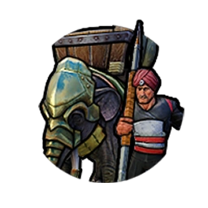
Indische Spezialeinheit der Schweren Kavallerie in der Klassik. Angrenzende feindliche Einheiten erhalten -5  Kampfstärke.
Kampfstärke.
Indien Gandhi

Dharma
Erhält Anhänger-Glaubenssatz-Bonusse in einer Stadt von jeder Religion mit mindestens 1 Anhänger. Städte erhalten eine  Annehmlichkeit für jede Religion mit mindestens 1 Anhänger. Missionare haben +2 Streuladungen. +100 % religiöser Druck von Euren
Annehmlichkeit für jede Religion mit mindestens 1 Anhänger. Missionare haben +2 Streuladungen. +100 % religiöser Druck von Euren  Handelswegen.
Handelswegen.
Satyagraha
+5  Glauben für jede getroffene Zivilisation (einschließlich Indien), die eine Religion gegründet hat und nicht im Krieg ist. Feindliche Zivilisationen erhalten die doppelte Kriegsmüdigkeit beim Kampf gegen Gandhi.
Glauben für jede getroffene Zivilisation (einschließlich Indien), die eine Religion gegründet hat und nicht im Krieg ist. Feindliche Zivilisationen erhalten die doppelte Kriegsmüdigkeit beim Kampf gegen Gandhi.
Stufenbrunnen
Schaltet die Handwerker-Fähigkeit frei, einen Stufenbrunnen, die einzigartige Modernisierung Indiens, zu bauen.
+1  Nahrung und +1
Nahrung und +1  Wohnraum. +1
Wohnraum. +1  Glauben, wenn angrenzend an einen Heilige-Stätte-Bezirk. +1
Glauben, wenn angrenzend an einen Heilige-Stätte-Bezirk. +1  Nahrung, wenn angrenzend an einen Bauernhof. Zusätzlicher
Nahrung, wenn angrenzend an einen Bauernhof. Zusätzlicher  Wohnraum,
Wohnraum,  Glauben und zusätzliche
Glauben und zusätzliche  Nahrung beim Fortschritt durch den Technologie- und Ausrichtungsbaum. Verhindert
Nahrung beim Fortschritt durch den Technologie- und Ausrichtungsbaum. Verhindert  Nahrungsverlust während einer Dürre. Kann nicht auf Hügeln oder angrenzend an einen weiteren Stufenbrunnen gebaut werden.
Nahrungsverlust während einer Dürre. Kann nicht auf Hügeln oder angrenzend an einen weiteren Stufenbrunnen gebaut werden.
Varu
Indische Spezialeinheit der Schweren Kavallerie in der Klassik. Angrenzende feindliche Einheiten erhalten -5  Kampfstärke.
Kampfstärke.
Indonesien Gitarja

Großer Nusantara
Küsten- und See-Geländefelder bieten einen geringen Nachbarschaftsbonus für Heilige-Stätte-, Campus-, Industriegebiet- und Theaterplatz-Bezirke. +1  Annehmlichkeit durch Unterhaltung für jeden Unterhaltungskomplex, der an ein Küsten- oder See-Geländefeld grenzt.
Annehmlichkeit durch Unterhaltung für jeden Unterhaltungskomplex, der an ein Küsten- oder See-Geländefeld grenzt.
Erhabene Göttin der drei Welten
Marineeinheiten können mit  Glauben gekauft werden. Religiöse Einheiten zahlen keine Fortbewegung zum Wassern oder Ausschiffen. +2
Glauben gekauft werden. Religiöse Einheiten zahlen keine Fortbewegung zum Wassern oder Ausschiffen. +2  Glauben für Stadtzentren, die an Küsten- oder See-Geländefelder grenzen.
Glauben für Stadtzentren, die an Küsten- oder See-Geländefelder grenzen.
Kampung
Schaltet die Handwerker-Fähigkeit frei, ein Kampung, die einzigartige Modernisierung Indonesiens, zu bauen.
+1  Produktion und +1
Produktion und +1  Wohnraum.+1
Wohnraum.+1  Nahrung für jedes angrenzende Fischerboot. Zusätzlich
Nahrung für jedes angrenzende Fischerboot. Zusätzlich  Produktion,
Produktion,  Wohnraum und
Wohnraum und  Tourismus beim Fortschritt durch den Technologie- und Ausrichtungsbaum. Muss auf einem Küsten- oder See-Geländefeld gebaut werden, das an eine Meeresressource angrenzt.
Tourismus beim Fortschritt durch den Technologie- und Ausrichtungsbaum. Muss auf einem Küsten- oder See-Geländefeld gebaut werden, das an eine Meeresressource angrenzt.
Jong

Indonesische einzigartige Mittelalter-Marineeinheit, die die Fregatte ersetzt. Formationseinheiten erben die  Fortbewegungsgeschwindigkeit der Eskorte und +5
Fortbewegungsgeschwindigkeit der Eskorte und +5  Kampfstärke wenn in einer Formation.
Kampfstärke wenn in einer Formation.
Japan Hojo Tokimune

Meiji-Restauration
Alle Bezirke erhalten einen zusätzlichen Standard-Nachbarschaftsbonus für das Angrenzen an einen anderen Bezirk.
Götterwind
Landeinheiten haben +5  Kampfstärke auf Land-Geländefeldern, die an Küsten angrenzen. Marineeinheiten haben +5
Kampfstärke auf Land-Geländefeldern, die an Küsten angrenzen. Marineeinheiten haben +5  Kampfstärke auf Flachwasser-Geländefeldern. Baut Lager, Heilige Stätten und Theaterplätze in der Hälfte der üblichen Zeit. Einheiten erleiden keinen Schaden durch Hurrikans. Zivilisationen, die sich mit Japan im Krieg befinden, erleiden +100 % Einheitenschaden durch Hurrikans in japanischem Gebiet.
Kampfstärke auf Flachwasser-Geländefeldern. Baut Lager, Heilige Stätten und Theaterplätze in der Hälfte der üblichen Zeit. Einheiten erleiden keinen Schaden durch Hurrikans. Zivilisationen, die sich mit Japan im Krieg befinden, erleiden +100 % Einheitenschaden durch Hurrikans in japanischem Gebiet.
Elektronikfabrik

Einzigartiges Gebäude von Japan. Gewährt dieser Stadt +4  Kultur nach der Erforschung der Elektrizität. Der
Kultur nach der Erforschung der Elektrizität. Der  Produktionsbonus gilt für alle Stadtzentren im Umkreis von 6 Geländefeldern, die nicht schon einen Bonus durch diese Gebäudeart haben.
Produktionsbonus gilt für alle Stadtzentren im Umkreis von 6 Geländefeldern, die nicht schon einen Bonus durch diese Gebäudeart haben.
Samurai

Japanische Spezial-Nahkampfeinheit des Mittelalters, die den Landsknecht ersetzt. Erleidet bei Schaden keine Kampfmalusse.
Japan Tokugawa

Meiji-Restauration
Alle Bezirke erhalten einen zusätzlichen Standard-Nachbarschaftsbonus für das Angrenzen an einen anderen Bezirk.
Baku-han
Internationale  Handelswege erhalten -25 % Ertrag und
Handelswege erhalten -25 % Ertrag und  Tourismus, inländische
Tourismus, inländische  Handelswege bieten hingegen +1
Handelswege bieten hingegen +1  Kultur, +1
Kultur, +1  Wissenschaft und +2
Wissenschaft und +2  Gold für jeden Spezialbezirk am Zielort. Städte innerhalb von 6 Geländefeldern von der
Gold für jeden Spezialbezirk am Zielort. Städte innerhalb von 6 Geländefeldern von der  Hauptstadt Japans sind zu 100 % loyal und erhalten nach der Erforschung der Luftfahrt +1
Hauptstadt Japans sind zu 100 % loyal und erhalten nach der Erforschung der Luftfahrt +1  Tourismus für jeden Bezirk.
Tourismus für jeden Bezirk.
Elektronikfabrik
Einzigartiges Gebäude von Japan. Gewährt dieser Stadt +4  Kultur nach der Erforschung der Elektrizität. Der
Kultur nach der Erforschung der Elektrizität. Der  Produktionsbonus gilt für alle Stadtzentren im Umkreis von 6 Geländefeldern, die nicht schon einen Bonus durch diese Gebäudeart haben.
Produktionsbonus gilt für alle Stadtzentren im Umkreis von 6 Geländefeldern, die nicht schon einen Bonus durch diese Gebäudeart haben.
Samurai
Japanische Spezial-Nahkampfeinheit des Mittelalters, die den Landsknecht ersetzt. Erleidet bei Schaden keine Kampfmalusse.
Khmer Jayavarman VII.

Große Barays
Städte mit einem Aquädukt erhalten +1  Annehmlichkeit durch Unterhaltung und +1
Annehmlichkeit durch Unterhaltung und +1  Glauben pro
Glauben pro  Bevölkerung. Bauernhöfe bieten +2
Bevölkerung. Bauernhöfe bieten +2  Nahrung, wenn sie an ein Aquädukt grenzen, und +1
Nahrung, wenn sie an ein Aquädukt grenzen, und +1  Glauben, wenn sie an eine Heilige Stätte grenzen.
Glauben, wenn sie an eine Heilige Stätte grenzen.
Klöster des Königs
Heilige Stätten erhalten einen großen Nachbarschaftsbonus für Flüsse, lösen einen Kulturschock aus, bieten  Nahrung in Höhe ihres Nachbarschaftsbonus und +2
Nahrung in Höhe ihres Nachbarschaftsbonus und +2  Wohnraum, wenn sie an einen Fluss grenzen.
Wohnraum, wenn sie an einen Fluss grenzen.
Prasat
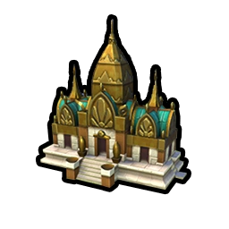
+6  Glauben. Einzigartiges Gebäude des Khmer-Reichs. Ersetzt den Tempel. Erforderlich für den Erwerb von Aposteln und Inquisitoren mit
Glauben. Einzigartiges Gebäude des Khmer-Reichs. Ersetzt den Tempel. Erforderlich für den Erwerb von Aposteln und Inquisitoren mit  Glauben. +0,5
Glauben. +0,5  Kultur pro
Kultur pro  Bevölkerung dieser Stadt. Bringt nach Erforschung der Luftfahrt +10
Bevölkerung dieser Stadt. Bringt nach Erforschung der Luftfahrt +10  Tourismus, wenn die
Tourismus, wenn die  Stadtbevölkerung mindestens 10 entspricht, beziehungsweise +20
Stadtbevölkerung mindestens 10 entspricht, beziehungsweise +20  Tourismus, wenn die
Tourismus, wenn die  Stadtbevölkerung mindestens 20 entspricht.
Stadtbevölkerung mindestens 20 entspricht.
Domrey
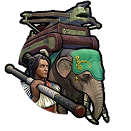
Einzigartige Khmer Mittelalter-Belagerungseinheit, die den Trebok ersetzt und sowohl im Nahkampf als auch auf Distanz  stärker ist. Kann sich in einer Runde sowohl fortbewegen als auch schießen und wendet Kontrollzone an.
stärker ist. Kann sich in einer Runde sowohl fortbewegen als auch schießen und wendet Kontrollzone an.
Kongo Mvemba á Nzinga

Nkisi
+2  Nahrung, +2
Nahrung, +2  Produktion, +1
Produktion, +1  Glauben und +4
Glauben und +4  Gold durch jede
Gold durch jede  Reliquie, jedes
Reliquie, jedes  Artefakt und jedes
Artefakt und jedes  Große Skulpturwerk zusätzlich zur üblichen
Große Skulpturwerk zusätzlich zur üblichen  Kultur. 50% mehr für
Kultur. 50% mehr für  Große Schriftsteller,
Große Schriftsteller,  Große Künstler,
Große Künstler,  Große Musiker und
Große Musiker und  Große Händler. Der Palast hat Plätze für 5 Große Werke.
Große Händler. Der Palast hat Plätze für 5 Große Werke.
Konvertit
Kann keine Heilige-Stätte-Bezirke bauen, Große Propheten erhalten oder Religionen gründen. Erhält alle Glaubenssätze der Religion, der die meisten seiner Städte folgen. Erhält immer einen Apostel, wenn ein M'banza oder Theaterplatz-Bezirk vollendet wird (von der Mehrheitsreligion der jeweiligen Stadt).
M'banza
Ein Bezirk, der nur auf Regenwald- oder Wald-Geländefeldern errichtet werden kann. Kann nur vom Kongo gebaut werden. Ersetzt das Wohnviertel, ist aber früher verfügbar und günstiger im Bau. Gewährt +5  Wohnraum, +2
Wohnraum, +2  Nahrung und +4
Nahrung und +4  Gold, unabhängig von der Anziehungskraft.
Gold, unabhängig von der Anziehungskraft.
Ngao Mbeba

Kongolesische Spezialeinheit der Klassik. Ersetzt den Schwertkämpfer. +10  Kampfstärke bei Verteidigung gegen Fernangriffe. Kann durch Wald und Regenwald sehen und gehen.
Kampfstärke bei Verteidigung gegen Fernangriffe. Kann durch Wald und Regenwald sehen und gehen.
Kongo Nzinga Mbande

Nkisi
+2  Nahrung, +2
Nahrung, +2  Produktion, +1
Produktion, +1  Glauben und +4
Glauben und +4  Gold durch jede
Gold durch jede  Reliquie, jedes
Reliquie, jedes  Artefakt und jedes
Artefakt und jedes  Große Skulpturwerk zusätzlich zur üblichen
Große Skulpturwerk zusätzlich zur üblichen  Kultur. 50% mehr für
Kultur. 50% mehr für  Große Schriftsteller,
Große Schriftsteller,  Große Künstler,
Große Künstler,  Große Musiker und
Große Musiker und  Große Händler. Der Palast hat Plätze für 5 Große Werke.
Große Händler. Der Palast hat Plätze für 5 Große Werke.
Königin von Ndongo und Matamba
Städte auf dem gleichen Kontinent wie die eigene  Hauptstadt erhalten +10 % Erträge (die
Hauptstadt erhalten +10 % Erträge (die  Hauptstadt eingeschlossen), Städte auf anderen Kontinenten verlieren -15 %.
Hauptstadt eingeschlossen), Städte auf anderen Kontinenten verlieren -15 %.
M'banza
Ein Bezirk, der nur auf Regenwald- oder Wald-Geländefeldern errichtet werden kann. Kann nur vom Kongo gebaut werden. Ersetzt das Wohnviertel, ist aber früher verfügbar und günstiger im Bau. Gewährt +5  Wohnraum, +2
Wohnraum, +2  Nahrung und +4
Nahrung und +4  Gold, unabhängig von der Anziehungskraft.
Gold, unabhängig von der Anziehungskraft.
Ngao Mbeba
Kongolesische Spezialeinheit der Klassik. Ersetzt den Schwertkämpfer. +10  Kampfstärke bei Verteidigung gegen Fernangriffe. Kann durch Wald und Regenwald sehen und gehen.
Kampfstärke bei Verteidigung gegen Fernangriffe. Kann durch Wald und Regenwald sehen und gehen.
Korea Sejong

Drei Reiche
Minen erhalten +1  Wissenschaft für jeden angrenzenden Seowon-Bezirk. Bauernhöfe erhalten +1
Wissenschaft für jeden angrenzenden Seowon-Bezirk. Bauernhöfe erhalten +1  Nahrung für jeden angrenzenden Seowon-Bezirk..
Nahrung für jeden angrenzenden Seowon-Bezirk..
Hangul
Nach Fertigstellung Eurer ersten Technologie eines neuen Zeitalters, erhaltet Ihr die doppelte Menge der  Wissenschaft pro Runde als
Wissenschaft pro Runde als  Kultur.
Kultur.
Seowon

Ein ausschließlich Korea zur Verfügung stehender Bezirk für wissenschaftliche Bestrebungen. Ersetzt den Campus-Bezirk. +4  Wissenschaft. -1
Wissenschaft. -1  Wissenschaft für jedes angrenzende Geländefeld mit Bezirk. Muss auf Hügeln gebaut werden.
Wissenschaft für jedes angrenzende Geländefeld mit Bezirk. Muss auf Hügeln gebaut werden.
Hwach'a
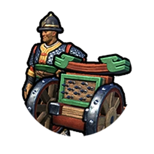
Koreanische Spezialeinheit der Renaissance, die die Feldkanone ersetzt. Hohe  Fernkampfstärke. Kann sich nicht in einer Runde bewegen und angreifen.
Fernkampfstärke. Kann sich nicht in einer Runde bewegen und angreifen.
Korea Seondeok

Drei Reiche
Minen erhalten +1  Wissenschaft für jeden angrenzenden Seowon-Bezirk. Bauernhöfe erhalten +1
Wissenschaft für jeden angrenzenden Seowon-Bezirk. Bauernhöfe erhalten +1  Nahrung für jeden angrenzenden Seowon-Bezirk..
Nahrung für jeden angrenzenden Seowon-Bezirk..
Hwarang
In einer Stadt etablierte  Gouverneure bringen +3 %
Gouverneure bringen +3 %  Kultur und
Kultur und  Wissenschaft für jede verdiente Beförderung, inklusive der ersten.
Wissenschaft für jede verdiente Beförderung, inklusive der ersten.
Seowon
Ein ausschließlich Korea zur Verfügung stehender Bezirk für wissenschaftliche Bestrebungen. Ersetzt den Campus-Bezirk. +4  Wissenschaft. -1
Wissenschaft. -1  Wissenschaft für jedes angrenzende Geländefeld mit Bezirk. Muss auf Hügeln gebaut werden.
Wissenschaft für jedes angrenzende Geländefeld mit Bezirk. Muss auf Hügeln gebaut werden.
Hwach'a
Koreanische Spezialeinheit der Renaissance, die die Feldkanone ersetzt. Hohe  Fernkampfstärke. Kann sich nicht in einer Runde bewegen und angreifen.
Fernkampfstärke. Kann sich nicht in einer Runde bewegen und angreifen.
Makedonien Alexander

Hellenistische Fusion
Erhaltet bei der Eroberung einer Stadt, die keine freie Stadt ist, ein  Heureka für jedes Lager oder jeden Campus in der eroberten Stadt und eine
Heureka für jedes Lager oder jeden Campus in der eroberten Stadt und eine  Eingebung für jede Heilige Stätte oder jeden Theaterplatz.
Eingebung für jede Heilige Stätte oder jeden Theaterplatz.
Bis zum Ende der Welt
Städte werden nicht kriegsmüde. Alle Militäreinheiten heilen vollständig, wenn dieser Spieler eine Stadt mit einem Weltwunder einnimmt.
Basilikoi Paides

Einzigartiges Gebäude von Makedonien. +25 % Kampferfahrung für alle Landnahkampf- und -Fernkampfeinheiten, und Hetairoi, die in dieser Stadt ausgebildet werden. Erhalt von +25 %  Wissenschaft gemessen an den Kosten der Einheit, wenn in dieser Stadt eine militärische Einheit erschaffen wird.
Wissenschaft gemessen an den Kosten der Einheit, wenn in dieser Stadt eine militärische Einheit erschaffen wird.
Strategisches Ressourcen-Vorratslager +10 (bei Standardgeschwindigkeit).
Kann nicht in einem Lagerbezirk gebaut werden, in dem bereits Stallungen sind.
Hetairos
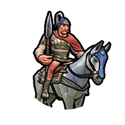
Spezielle Schwere Kavallerie der Makedonier, die den Reiter ersetzt. Zusätzlich +5  Kampfstärke angrenzend an einen Großen General. +5 Großer General-Punkte für Ausschaltung einer feindlichen Einheit. Startet mit einer kostenlosen Beförderung.
Kampfstärke angrenzend an einen Großen General. +5 Großer General-Punkte für Ausschaltung einer feindlichen Einheit. Startet mit einer kostenlosen Beförderung.
Hypaspist
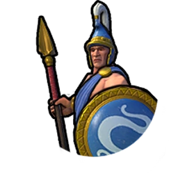
Einzigartige Nahkampf-Spezialeinheit der Makedonier, die den Schwertkämpfer ersetzt. +5  Kampfstärke bei der Belagerung von Bezirken. 50 % zusätzlicher Unterstützungsbonus.
Kampfstärke bei der Belagerung von Bezirken. 50 % zusätzlicher Unterstützungsbonus.
Mali Mansa Musa

Lieder der Jeli
Stadtzentren erhalten +1  Glauben und +1
Glauben und +1  Nahrung für jedes angrenzende Wüsten- und Wüstenhügel-Geländefeld. Minen erhalten -1
Nahrung für jedes angrenzende Wüsten- und Wüstenhügel-Geländefeld. Minen erhalten -1  Produktion und +4
Produktion und +4  Gold. Gebäude im Handelszentrum können mit
Gold. Gebäude im Handelszentrum können mit  Glauben gekauft werden. -30 %
Glauben gekauft werden. -30 %  Produktion beim Bau von Gebäuden oder Ausbilden von Einheiten.
Produktion beim Bau von Gebäuden oder Ausbilden von Einheiten.
Sahel-Händler
Internationale  Handelswege erhalten +1
Handelswege erhalten +1  Gold für jedes flache Wüsten-Geländefeld in der Ursprungsstadt. Erhaltet jedes Mal +1
Gold für jedes flache Wüsten-Geländefeld in der Ursprungsstadt. Erhaltet jedes Mal +1  Handelswegkapazität, wenn Ihr in ein Goldenes Zeitalter eintretet.
Handelswegkapazität, wenn Ihr in ein Goldenes Zeitalter eintretet.
Suguba
Ein ausschließlich Mali zur Verfügung stehender Bezirk, der sich auf Finanzen und Handel spezialisiert und das Handelszentrum ersetzt. Einheiten, Gebäude und Bezirke kosten 20 % weniger mit  Gold und
Gold und  Glauben in dieser Stadt.
Glauben in dieser Stadt.
+2  Goldbonus für jede angrenzende Heilige Stätte. +2
Goldbonus für jede angrenzende Heilige Stätte. +2  Goldbonus von einem Geländefeld mit einem Flussufer. +1
Goldbonus von einem Geländefeld mit einem Flussufer. +1  Goldbonus für jeweils 2 angrenzende Bezirke.
Goldbonus für jeweils 2 angrenzende Bezirke.
Mandekalu-Kavallerie

Einzigartige Einheit Malis im Mittelalter, die den Ritter ersetzt. Händler-Einheiten sind immun gegen Plünderung, wenn sie sich innerhalb von 4 Geländefeldern um eine Mandekalu-Kavallerie und auf einem Land-Geländefeld befinden. Kampfsiege gewähren  Gold in Höhe von 100 % der
Gold in Höhe von 100 % der  Basis-Kampfstärke dieser Einheit (bei Standardgeschwindigkeit).
Basis-Kampfstärke dieser Einheit (bei Standardgeschwindigkeit).
Mali Sundiata Keïta

Lieder der Jeli
Stadtzentren erhalten +1  Glauben und +1
Glauben und +1  Nahrung für jedes angrenzende Wüsten- und Wüstenhügel-Geländefeld. Minen erhalten -1
Nahrung für jedes angrenzende Wüsten- und Wüstenhügel-Geländefeld. Minen erhalten -1  Produktion und +4
Produktion und +4  Gold. Gebäude im Handelszentrum können mit
Gold. Gebäude im Handelszentrum können mit  Glauben gekauft werden. -30 %
Glauben gekauft werden. -30 %  Produktion beim Bau von Gebäuden oder Ausbilden von Einheiten.
Produktion beim Bau von Gebäuden oder Ausbilden von Einheiten.
Sogolon
Die Rekrutierung Großer Persönlichkeiten kostet 20% weniger  Gold und der Markt erhält 2 Plätze für
Gold und der Markt erhält 2 Plätze für  Große Literaturwerke in Städten, die von Mali gegründet wurden.
Große Literaturwerke in Städten, die von Mali gegründet wurden.  Große Literaturwerke erhalten +4
Große Literaturwerke erhalten +4  Gold und +2
Gold und +2  Produktion.
Produktion.
Suguba
Ein ausschließlich Mali zur Verfügung stehender Bezirk, der sich auf Finanzen und Handel spezialisiert und das Handelszentrum ersetzt. Einheiten, Gebäude und Bezirke kosten 20 % weniger mit  Gold und
Gold und  Glauben in dieser Stadt.
Glauben in dieser Stadt.
+2  Goldbonus für jede angrenzende Heilige Stätte. +2
Goldbonus für jede angrenzende Heilige Stätte. +2  Goldbonus von einem Geländefeld mit einem Flussufer. +1
Goldbonus von einem Geländefeld mit einem Flussufer. +1  Goldbonus für jeweils 2 angrenzende Bezirke.
Goldbonus für jeweils 2 angrenzende Bezirke.
Mandekalu-Kavallerie
Einzigartige Einheit Malis im Mittelalter, die den Ritter ersetzt. Händler-Einheiten sind immun gegen Plünderung, wenn sie sich innerhalb von 4 Geländefeldern um eine Mandekalu-Kavallerie und auf einem Land-Geländefeld befinden. Kampfsiege gewähren  Gold in Höhe von 100 % der
Gold in Höhe von 100 % der  Basis-Kampfstärke dieser Einheit (bei Standardgeschwindigkeit).
Basis-Kampfstärke dieser Einheit (bei Standardgeschwindigkeit).
Maori Kupe

Mana
Beginnt das Spiel mit den bereits freigeschalteten Technologien Segeln und Schiffsbau und mit der Fähigkeit, Ozean-Geländefelder zu betreten. Gewasserte Einheiten erhalten +2  Fortbewegung. Wälder und Regenwälder ohne Modernisierung erhalten +1
Fortbewegung. Wälder und Regenwälder ohne Modernisierung erhalten +1  Produktion. Zusätzlich +1
Produktion. Zusätzlich +1  Produktion durch Merkantilismus und +2
Produktion durch Merkantilismus und +2  Produktion durch Naturschutz. Fischerboote bieten +1
Produktion durch Naturschutz. Fischerboote bieten +1  Nahrung und einen Kulturschock auf angrenzende Geländefelder. Ressourcen können nicht geerntet werden.
Nahrung und einen Kulturschock auf angrenzende Geländefelder. Ressourcen können nicht geerntet werden.  Große Schriftsteller können nicht verdient werden.
Große Schriftsteller können nicht verdient werden.
Kupes Reise
Beginnt das Spiel in einem Ozean-Geländefeld. Erhaltet einen kostenlosen Handwerker und +1  Bevölkerung beim Ansiedeln der ersten Stadt. Der Palast erhält +3
Bevölkerung beim Ansiedeln der ersten Stadt. Der Palast erhält +3  Wohnraum und +1
Wohnraum und +1  Annehmlichkeit. +2
Annehmlichkeit. +2  Wissenschaft und +2
Wissenschaft und +2  Kultur pro Runde, bevor Ihr Eure erste Stadt ansiedelt.
Kultur pro Runde, bevor Ihr Eure erste Stadt ansiedelt.
Marae
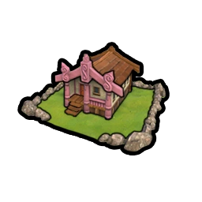
Einzigartiges Gebäude der Maori. +1  Kultur und
Kultur und  Glauben für alle Geländefelder dieser Stadt mit einer passierbaren Geländeart oder einem Naturwunder. Erhaltet nach der Erforschung der Luftfahrt +1
Glauben für alle Geländefelder dieser Stadt mit einer passierbaren Geländeart oder einem Naturwunder. Erhaltet nach der Erforschung der Luftfahrt +1  Tourismus für alle Geländefelder dieser Stadt mit einer Geländeart oder einem Naturwunder. Keine Unterhaltskosten. Keine Großes-Werk-Plätze.
Tourismus für alle Geländefelder dieser Stadt mit einer Geländeart oder einem Naturwunder. Keine Unterhaltskosten. Keine Großes-Werk-Plätze.
Pā
Schaltet die Toa-Fähigkeit frei, ein Pā, die einzigartige Modernisierung der Maori, zu bauen.
Besetzende Einheit erhält +4  Verteidigungsstärke und automatisch 2 Runden Befestigung. Eine Maori-Einheit, die ein Pā besetzt, heilt sich auch dann, wenn sie sich gerade bewegt oder angegriffen hat. Muss auf einem Hügel-Geländefeld gebaut werden.
Verteidigungsstärke und automatisch 2 Runden Befestigung. Eine Maori-Einheit, die ein Pā besetzt, heilt sich auch dann, wenn sie sich gerade bewegt oder angegriffen hat. Muss auf einem Hügel-Geländefeld gebaut werden.
Toa

Einzigartige Nahkampfeinheit der Maori der Klassik. Angrenzende feindliche Einheiten erhalten -5  Kampfstärke. Kann die einzigartige Pā-Modernisierung bauen.
Kampfstärke. Kann die einzigartige Pā-Modernisierung bauen.
Mapuche Lautaro

Toki
Städte mit einem etablierten  Gouverneur gewähren +5 %
Gouverneur gewähren +5 %  Kultur, +5 %
Kultur, +5 %  Produktion sowie +10 % Kampferfahrung für alle in dieser Stadt ausgebildeten Einheiten. Diese Werte verdreifachen sich in nicht von den Mapuche gegründeten Städten. Alle Städte innerhalb einer Entfernung von 9 Geländefeldern von Eurem
Produktion sowie +10 % Kampferfahrung für alle in dieser Stadt ausgebildeten Einheiten. Diese Werte verdreifachen sich in nicht von den Mapuche gegründeten Städten. Alle Städte innerhalb einer Entfernung von 9 Geländefeldern von Eurem  Gouverneur erhalten pro Runde +4 Loyalität für Eure Zivilisation.
Gouverneur erhalten pro Runde +4 Loyalität für Eure Zivilisation.
Schneller Falke
+10  Kampfstärke beim Kampf gegen freie Städte, die sich in einem Goldenen oder Heldenzeitalter befinden. Wenn eine feindliche Einheit innerhalb der Grenzen einer feindlichen Stadt besiegt wird, verliert die Stadt 20 Loyalität und 40 Loyalität, wenn sich die Zivilisation in einem Goldenen oder Heldenzeitalter befindet.
Kampfstärke beim Kampf gegen freie Städte, die sich in einem Goldenen oder Heldenzeitalter befinden. Wenn eine feindliche Einheit innerhalb der Grenzen einer feindlichen Stadt besiegt wird, verliert die Stadt 20 Loyalität und 40 Loyalität, wenn sich die Zivilisation in einem Goldenen oder Heldenzeitalter befindet.
Chemamüll
Schaltet die Handwerker-Fähigkeit frei, ein Chemamüll, die einzigartige Modernisierung der Mapuche, zu bauen.
+1  Produktion. Bringt
Produktion. Bringt  Kultur in Höhe von 75 % der Anziehungskraft des Geländefelds. Zusätzlicher
Kultur in Höhe von 75 % der Anziehungskraft des Geländefelds. Zusätzlicher  Tourismus nach Erforschung der Luftfahrt. Mindest-Anziehungskraft "Atemberaubend".
Tourismus nach Erforschung der Luftfahrt. Mindest-Anziehungskraft "Atemberaubend".
Malón

Mapuche-Spezialeinheit der Renaissance. +5  Kampfstärkebonus, wenn innerhalb von 4 Geländefeldern im eigenen Gebiet. Plündern kostet 1
Kampfstärkebonus, wenn innerhalb von 4 Geländefeldern im eigenen Gebiet. Plündern kostet 1  Fortbewegung.
Fortbewegung.
Mayareich Wac Chanil Ajaw

Mayab
Das Ansiedeln neben Süßwasser- und Küsten-Geländefeldern liefert keinen zusätzlichen  Wohnraum, aber jeder Bauernhof bietet zusätzlich +1
Wohnraum, aber jeder Bauernhof bietet zusätzlich +1  Wohnraum, +1
Wohnraum, +1  Produktion für jedes angrenzende Observatorium und +1
Produktion für jedes angrenzende Observatorium und +1  Gold. +1
Gold. +1  Annehmlichkeit für jedes an das Stadtzentrum angrenzende Luxusgut.
Annehmlichkeit für jedes an das Stadtzentrum angrenzende Luxusgut.
Ix Mutal Ajaw
Städte innerhalb von 6 Geländefeldern Entfernung zur  Hauptstadt, die selbst keine Hauptstädte sind, erhalten +10 % auf alle Erträge und bei Gründung einen Handwerker. Andere Städte, die keine Hauptstädte sind, erhalten -15 % auf alle Erträge. +5
Hauptstadt, die selbst keine Hauptstädte sind, erhalten +10 % auf alle Erträge und bei Gründung einen Handwerker. Andere Städte, die keine Hauptstädte sind, erhalten -15 % auf alle Erträge. +5  Kampfstärke für Einheiten innerhalb von 6 Geländefeldern Entfernung zur
Kampfstärke für Einheiten innerhalb von 6 Geländefeldern Entfernung zur  Hauptstadt.
Hauptstadt.
Observatorium

Ein Bezirk, der ausschließlich den Maya für wissenschaftliche Vorhaben zur Verfügung steht. Ersetzt den Campus-Bezirk und ist günstiger zu bauen.
+2  Wissenschaftsbonus für angrenzende Plantagen. +1
Wissenschaftsbonus für angrenzende Plantagen. +1  Wissenschaftsbonus für angrenzende Bauernhöfe oder Bezirke.
Wissenschaftsbonus für angrenzende Bauernhöfe oder Bezirke.
Hul'che

Maya-Fernkampf-Spezialeinheit der Antike, die den Bogenschützen ersetzt. Starker Fernangriff. +5  Kampfstärke beim Kampf mit einem verwundeten Gegner.
Kampfstärke beim Kampf mit einem verwundeten Gegner.
Mongolei Dschingis Khan

Örtöö
Der Beginn eines  Handelswegs erzeugt sofort einen
Handelswegs erzeugt sofort einen  Handelsposten in der Zielstadt. Erhaltet eine zusätzliche Stufe von
Handelsposten in der Zielstadt. Erhaltet eine zusätzliche Stufe von  diplomatischer Sichtbarkeit für den Besitz eines
diplomatischer Sichtbarkeit für den Besitz eines  Handelspostens in jeder Stadt einer Zivilisation. Alle mongolischen Einheiten erhalten das Doppelte des üblichen Bonus auf die
Handelspostens in jeder Stadt einer Zivilisation. Alle mongolischen Einheiten erhalten das Doppelte des üblichen Bonus auf die  Kampfstärke für eine höhere Stufe von
Kampfstärke für eine höhere Stufe von  diplomatischer Sichtbarkeit gegenüber ihrem Gegner.
diplomatischer Sichtbarkeit gegenüber ihrem Gegner.
Mongolische Horde
Alle Kavallerieeinheiten erhalten +3  Kampfstärke und eine Chance, besiegte feindliche Kavallerieeinheiten gefangen zu nehmen.
Kampfstärke und eine Chance, besiegte feindliche Kavallerieeinheiten gefangen zu nehmen.
Ordu
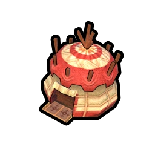
Einzigartiges Gebäude der Mongolei. Gewährt eine Fähigkeit, die in dieser Stadt ausgebildeter Schwerer und Leichter Kavallerie +1  Fortbewegung ermöglicht. +25 % Kampferfahrung für alle Einheiten der Kavallerie- und Belagerungsklasse, die in dieser Stadt ausgebildet werden.
Fortbewegung ermöglicht. +25 % Kampferfahrung für alle Einheiten der Kavallerie- und Belagerungsklasse, die in dieser Stadt ausgebildet werden.
Strategisches Ressourcen-Vorratslager +10 (bei Standardgeschwindigkeit).
Kann nicht in einem Lagerbezirk gebaut werden, in dem schon eine Kaserne ist.
Keshig
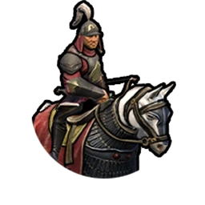
Einzigartige mongolische Fernkampf-Kavallerie-Einheit des Mittelalters. Kann sich langsamer bewegende zivile und Unterstützungseinheiten in höherer  Fortbewegungsgeschwindigkeit eskortieren.
Fortbewegungsgeschwindigkeit eskortieren.
Mongolei Kublai Khan (Mongolei)
.webp)
Örtöö
Der Beginn eines  Handelswegs erzeugt sofort einen
Handelswegs erzeugt sofort einen  Handelsposten in der Zielstadt. Erhaltet eine zusätzliche Stufe von
Handelsposten in der Zielstadt. Erhaltet eine zusätzliche Stufe von  diplomatischer Sichtbarkeit für den Besitz eines
diplomatischer Sichtbarkeit für den Besitz eines  Handelspostens in jeder Stadt einer Zivilisation. Alle mongolischen Einheiten erhalten das Doppelte des üblichen Bonus auf die
Handelspostens in jeder Stadt einer Zivilisation. Alle mongolischen Einheiten erhalten das Doppelte des üblichen Bonus auf die  Kampfstärke für eine höhere Stufe von
Kampfstärke für eine höhere Stufe von  diplomatischer Sichtbarkeit gegenüber ihrem Gegner.
diplomatischer Sichtbarkeit gegenüber ihrem Gegner.
Gerege
Ein zusätzlicher Wirtschaftspolitik-Platz in jeder Regierung. Zufälliges  Heureka und
Heureka und  Eingebung, wenn Ihr zum ersten Mal einen
Eingebung, wenn Ihr zum ersten Mal einen  Handelsposten in der Stadt einer anderen Zivilisation etabliert.
Handelsposten in der Stadt einer anderen Zivilisation etabliert.
Ordu
Einzigartiges Gebäude der Mongolei. Gewährt eine Fähigkeit, die in dieser Stadt ausgebildeter Schwerer und Leichter Kavallerie +1  Fortbewegung ermöglicht. +25 % Kampferfahrung für alle Einheiten der Kavallerie- und Belagerungsklasse, die in dieser Stadt ausgebildet werden.
Fortbewegung ermöglicht. +25 % Kampferfahrung für alle Einheiten der Kavallerie- und Belagerungsklasse, die in dieser Stadt ausgebildet werden.
Strategisches Ressourcen-Vorratslager +10 (bei Standardgeschwindigkeit).
Kann nicht in einem Lagerbezirk gebaut werden, in dem schon eine Kaserne ist.
Keshig
Einzigartige mongolische Fernkampf-Kavallerie-Einheit des Mittelalters. Kann sich langsamer bewegende zivile und Unterstützungseinheiten in höherer  Fortbewegungsgeschwindigkeit eskortieren.
Fortbewegungsgeschwindigkeit eskortieren.
Niederlande Wilhelmina

Rhein-Maas-Delta
Erheblicher Nachbarschaftsbonus für Campusse, Theaterplätze und Industriegebiete, wenn neben einem Fluss. Kulturschock für angrenzende Felder bei Abschluss eines Hafens. +50 %  Produktion für den Staudamm-Bezirk und den Bau von Hochwassersperren.
Produktion für den Staudamm-Bezirk und den Bau von Hochwassersperren.
Radio Oranje
Eure  Handelswege zu Euren eigenen Städten gewähren +2 Loyalität pro Runde von der Ausgangsstadt.
Handelswege zu Euren eigenen Städten gewähren +2 Loyalität pro Runde von der Ausgangsstadt.  Handelswege zu oder von fremden Städten gewähren +2
Handelswege zu oder von fremden Städten gewähren +2  Kultur.
Kultur.
Koog
Schaltet die Handwerker-Fähigkeit frei, einen Koog, die einzigartige Modernisierung der Niederlande, zu bauen.
+1  Nahrung, +1
Nahrung, +1  Produktion und +0.5
Produktion und +0.5  Wohnraum. +1
Wohnraum. +1  Nahrung, wenn er an eine Koog-Modernisierung angrenzt. Zusätzlich
Nahrung, wenn er an eine Koog-Modernisierung angrenzt. Zusätzlich  Produktion,
Produktion,  Gold und
Gold und  Nahrung für Euren Fortschritt beim Ausrichtungs- und Technologiebaum. Muss auf einem Küsten- oder See-Geländefeld gebaut werden, das an drei oder mehr passierbare Land-Geländefelder angrenzt. Erhöht die
Nahrung für Euren Fortschritt beim Ausrichtungs- und Technologiebaum. Muss auf einem Küsten- oder See-Geländefeld gebaut werden, das an drei oder mehr passierbare Land-Geländefelder angrenzt. Erhöht die  Fortbewegungskosten des Geländefelds auf 3.
Fortbewegungskosten des Geländefelds auf 3.
De Zeven Provinciën

Niederländische Spezialeinheit der Renaissance, die die Fregatte ersetzt. +7  Kampfstärke beim Angriff auf zu verteidigende Bezirke.
Kampfstärke beim Angriff auf zu verteidigende Bezirke.
Norwegen Harald Hardråde (Waräger)
.webp)
Knarr
Einheiten können Ozean-Geländefelder befahren, nachdem der Schiffsbau erforscht wurde. Marine-Nahkampfeinheiten heilen auf neutralem Gebiet. Einheiten ignorieren zusätzliche  Fortbewegungskosten durch Wassern und Ausschiffen.
Fortbewegungskosten durch Wassern und Ausschiffen.
Warägergarde
Alle Einheiten zahlen 2  Gold-Unterhalt weniger. 75 % Vergünstigung auf das Ausheben von Einheiten und ausgehobene Einheiten erhalten
Gold-Unterhalt weniger. 75 % Vergünstigung auf das Ausheben von Einheiten und ausgehobene Einheiten erhalten  Kultur,
Kultur,  Glauben und
Glauben und  Wissenschaft aus Eliminierungen in Höhe von 50 % der
Wissenschaft aus Eliminierungen in Höhe von 50 % der  Kampfstärke des Gegners. +1 Einflusspunkt pro Runde durch die Stabkirche.
Kampfstärke des Gegners. +1 Einflusspunkt pro Runde durch die Stabkirche.
Stabkirche

Einzigartiges Gebäude von Norwegen. Erforderlich für den Erwerb von Aposteln und Inquisitoren mit  Glauben. Heilige-Stätte-Bezirke erhalten einen zusätzlichen Nachbarschaftsbonus durch Wald. +1
Glauben. Heilige-Stätte-Bezirke erhalten einen zusätzlichen Nachbarschaftsbonus durch Wald. +1  Produktion für jedes Küstenressourcen-Geländefeld in dieser Stadt.
Produktion für jedes Küstenressourcen-Geländefeld in dieser Stadt.
Berserker
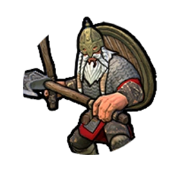
Einzigartige norwegische Nahkampfeinheit des Mittelalters, die den Landsknecht ersetzt. 4  Fortbewegungspunkte bei Start in feindlichem Gebiet. +10
Fortbewegungspunkte bei Start in feindlichem Gebiet. +10  Kampfstärke beim Angreifen und -5
Kampfstärke beim Angreifen und -5  Kampfstärke bei der Verteidigung gegen Nahkampfangriffe.
Kampfstärke bei der Verteidigung gegen Nahkampfangriffe.
Norwegen Harald Hardråde (Konge)
.webp)
Knarr
Einheiten können Ozean-Geländefelder befahren, nachdem der Schiffsbau erforscht wurde. Marine-Nahkampfeinheiten heilen auf neutralem Gebiet. Einheiten ignorieren zusätzliche  Fortbewegungskosten durch Wassern und Ausschiffen.
Fortbewegungskosten durch Wassern und Ausschiffen.
Blitz des Nordens
Gewährt Küstenraubzüge und +50 %  Produktion für alle Nahkampf-Marineeinheiten. Zusätzlich zu
Produktion für alle Nahkampf-Marineeinheiten. Zusätzlich zu  Gold erhaltet Ihr
Gold erhaltet Ihr  Wissenschaft durch Plündern von und Küstenraubzüge auf Minen. Plündern von und Küstenraubzüge auf Steinbrüche, Weiden, Plantagen und Jagdlager gewähren zusätzlich zu
Wissenschaft durch Plündern von und Küstenraubzüge auf Minen. Plündern von und Küstenraubzüge auf Steinbrüche, Weiden, Plantagen und Jagdlager gewähren zusätzlich zu  Glauben
Glauben  Kultur. Ihr erhaltet die Spezialeinheit Wikinger-Langschiff durch das Segeln.
Kultur. Ihr erhaltet die Spezialeinheit Wikinger-Langschiff durch das Segeln.
Stabkirche
Einzigartiges Gebäude von Norwegen. Erforderlich für den Erwerb von Aposteln und Inquisitoren mit  Glauben. Heilige-Stätte-Bezirke erhalten einen zusätzlichen Nachbarschaftsbonus durch Wald. +1
Glauben. Heilige-Stätte-Bezirke erhalten einen zusätzlichen Nachbarschaftsbonus durch Wald. +1  Produktion für jedes Küstenressourcen-Geländefeld in dieser Stadt.
Produktion für jedes Küstenressourcen-Geländefeld in dieser Stadt.
Berserker
Einzigartige norwegische Nahkampfeinheit des Mittelalters, die den Landsknecht ersetzt. 4  Fortbewegungspunkte bei Start in feindlichem Gebiet. +10
Fortbewegungspunkte bei Start in feindlichem Gebiet. +10  Kampfstärke beim Angreifen und -5
Kampfstärke beim Angreifen und -5  Kampfstärke bei der Verteidigung gegen Nahkampfangriffe.
Kampfstärke bei der Verteidigung gegen Nahkampfangriffe.
Wikinger - Langschiff

Norwegische Spezial-Marineeinheit der Antike. Ersetzt die Galeere. Kann feindliche Küstengebiete plündern und Zivilisten auf angrenzenden Feldern gefangen nehmen. 4  Fortbewegungspunkte in Küstengewässern.
Fortbewegungspunkte in Küstengewässern.
Nubien Amanitore

Ta-Seti
+30 %  Produktion für Fernkampfeinheiten. Alle Fernkampfeinheiten erhalten +50 % Kampferfahrung. Minen auf strategischen Ressourcen liefern +1
Produktion für Fernkampfeinheiten. Alle Fernkampfeinheiten erhalten +50 % Kampferfahrung. Minen auf strategischen Ressourcen liefern +1  Produktion. Minen auf Bonus-Ressourcen und Luxusgütern liefern +2
Produktion. Minen auf Bonus-Ressourcen und Luxusgütern liefern +2  Gold.
Gold.
Kandake von Meroë
+20%  Produktion für alle Bezirke oder +40%, wenn eine Nubische Pyramide an das Stadtzentrum angrenzt.
Produktion für alle Bezirke oder +40%, wenn eine Nubische Pyramide an das Stadtzentrum angrenzt.
Nubische Pyramide

Modernisierung, die durch Steinmetzkunst freigeschaltet wird und auf Wüste, Wüstenhügeln oder Schwemmland gebaut werden muss. +2  Glauben und +2
Glauben und +2  Nahrung. Erhält zusätzliche Erträge durch angrenzende Bezirke. +1
Nahrung. Erhält zusätzliche Erträge durch angrenzende Bezirke. +1  Nahrung, wenn angrenzend an ein Stadtzentrum. Für alle anderen Bezirke, die Nachbarschaftsbonusse gewähren: +1 für den entsprechenden Ertrag, wenn der Bezirk angrenzt.
Nahrung, wenn angrenzend an ein Stadtzentrum. Für alle anderen Bezirke, die Nachbarschaftsbonusse gewähren: +1 für den entsprechenden Ertrag, wenn der Bezirk angrenzt.
Pítati - Bogenschütze

Nubische Spezialeinheit der Antike, die den Bogenschützen ersetzt. Stärker als der Bogenschütze mit zusätzlicher  Fortbewegung. Wird zum Armbrustschützen verbessert.
Fortbewegung. Wird zum Armbrustschützen verbessert.
Osmanisches Reich Süleyman (Kanuni)
.webp)
Urbans Kanone
+50 %  Produktion für Belagerungseinheiten. Alle Belagerungseinheiten erhalten +5
Produktion für Belagerungseinheiten. Alle Belagerungseinheiten erhalten +5  Kampfstärke gegen Bezirk-Verteidigungen. Eroberte Städte verlieren keine
Kampfstärke gegen Bezirk-Verteidigungen. Eroberte Städte verlieren keine  Bevölkerung. Nicht von den Osmanen gegründete Städte erhalten +1
Bevölkerung. Nicht von den Osmanen gegründete Städte erhalten +1  Annehmlichkeit und +4 Loyalität pro Runde.
Annehmlichkeit und +4 Loyalität pro Runde.
Großwesir
Exklusiver einzigartiger Gouverneur mit militärischen und diplomatischen Fähigkeiten. Erlangt die einzigartige Einheit Janitschar und einen  Gouverneur-Titel, wenn die Schießpulver-Technologie erforscht wurde.
Gouverneur-Titel, wenn die Schießpulver-Technologie erforscht wurde.
Großer Basar

Einzigartiges Gebäude der Osmanen. Sammelt 1 zusätzliche strategische Ressource für jede unterschiedliche Art von strategischen Ressourcen, die diese Stadt modernisiert hat. Erhaltet 1  Annehmlichkeit für jedes Luxusgut, das diese Stadt modernisiert hat.
Annehmlichkeit für jedes Luxusgut, das diese Stadt modernisiert hat.
Berber-Korsar

Osmanische Marineeinheit des Mittelalters, die den Freibeuter ersetzt. Küstenraubzüge kosten keine  Fortbewegung. Kann auf Distanz nur von anderen Marine-Räubern gesichtet werden. Deckt Marine-Räuber in Sichtweite auf.
Fortbewegung. Kann auf Distanz nur von anderen Marine-Räubern gesichtet werden. Deckt Marine-Räuber in Sichtweite auf.
Janitschar
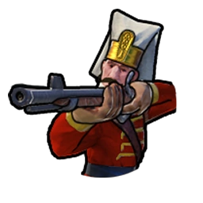
Einzigartige Osmanen-Einheit der Renaissance, die den Musketier ersetzt. Startet mit einer kostenlosen Beförderung. Stärker und günstiger als der Musketier. Um einen Janitscharen auszubilden, muss eine Stadt mindestens 2 Bevölkerung haben. Wurde eine Stadt von Osmanen gegründet, verliert sie einen Bewohner, wenn sie einen Janitscharen ausbildet.
Osmanisches Reich Süleyman (Muhteşem)
.webp)
Urbans Kanone
+50 %  Produktion für Belagerungseinheiten. Alle Belagerungseinheiten erhalten +5
Produktion für Belagerungseinheiten. Alle Belagerungseinheiten erhalten +5  Kampfstärke gegen Bezirk-Verteidigungen. Eroberte Städte verlieren keine
Kampfstärke gegen Bezirk-Verteidigungen. Eroberte Städte verlieren keine  Bevölkerung. Nicht von den Osmanen gegründete Städte erhalten +1
Bevölkerung. Nicht von den Osmanen gegründete Städte erhalten +1  Annehmlichkeit und +4 Loyalität pro Runde.
Annehmlichkeit und +4 Loyalität pro Runde.
Der Prächtige
+15%  Wissenschaft
Wissenschaft  Kultur in einem
Kultur in einem  Goldenen Zeitalter oder Heldenzeitalter. +4
Goldenen Zeitalter oder Heldenzeitalter. +4  Kampfstärke außerhalb eines
Kampfstärke außerhalb eines  Goldenen Zeitalters oder Heldenzeitalters gegen Zivilisationen, die sich ebenfalls nicht in einem
Goldenen Zeitalters oder Heldenzeitalters gegen Zivilisationen, die sich ebenfalls nicht in einem  Goldenen Zeitalter oder Heldenzeitalter befinden.
Goldenen Zeitalter oder Heldenzeitalter befinden.
Großer Basar
Einzigartiges Gebäude der Osmanen. Sammelt 1 zusätzliche strategische Ressource für jede unterschiedliche Art von strategischen Ressourcen, die diese Stadt modernisiert hat. Erhaltet 1  Annehmlichkeit für jedes Luxusgut, das diese Stadt modernisiert hat.
Annehmlichkeit für jedes Luxusgut, das diese Stadt modernisiert hat.
Berber-Korsar
Osmanische Marineeinheit des Mittelalters, die den Freibeuter ersetzt. Küstenraubzüge kosten keine  Fortbewegung. Kann auf Distanz nur von anderen Marine-Räubern gesichtet werden. Deckt Marine-Räuber in Sichtweite auf.
Fortbewegung. Kann auf Distanz nur von anderen Marine-Räubern gesichtet werden. Deckt Marine-Räuber in Sichtweite auf.
Persien Kyros

Satrapien
+1  Handelswegkapazität durch die Ausrichtung der Politischen Philosophie. Erhaltet +2
Handelswegkapazität durch die Ausrichtung der Politischen Philosophie. Erhaltet +2  Gold und +1
Gold und +1  Kultur durch Handelswege zwischen Euren eigenen Städten. Straßen auf Eurem Gebiet sind eine Stufe fortschrittlicher als üblich.
Kultur durch Handelswege zwischen Euren eigenen Städten. Straßen auf Eurem Gebiet sind eine Stufe fortschrittlicher als üblich.
Der Fall Babylons
+2  Fortbewegung für die ersten 10 Runden nach der Erklärung eines Überraschungskriegs gegen eine große Zivilisation. +5 Loyalität in besetzten Städten mit einer stationierten Einheit. Das Erklären eines Überraschungskriegs zählt nur bezüglich
Fortbewegung für die ersten 10 Runden nach der Erklärung eines Überraschungskriegs gegen eine große Zivilisation. +5 Loyalität in besetzten Städten mit einer stationierten Einheit. Das Erklären eines Überraschungskriegs zählt nur bezüglich  Groll und Kriegstreiberei als formeller Krieg.
Groll und Kriegstreiberei als formeller Krieg.
Pairidaeza
Schaltet die Handwerker-Fähigkeit frei, eine Pairidaeza, die einzigartige Modernisierung Persiens, zu bauen.
+1  Kultur und +2
Kultur und +2  Gold. +1 Anziehungskraft. +1
Gold. +1 Anziehungskraft. +1  Kultur, wenn neben einer Heiligen Stätte oder einem Theaterplatz-Bezirk. +1
Kultur, wenn neben einer Heiligen Stätte oder einem Theaterplatz-Bezirk. +1  Gold, wenn neben einem Handels- oder Stadtzentrum. Zusätzlich
Gold, wenn neben einem Handels- oder Stadtzentrum. Zusätzlich  Kultur und
Kultur und  Tourismus beim Fortschritt durch den Technologie- und Ausrichtungsbaum. Kann nicht auf Schnee, Tundra, Schneehügeln, Tundra-Hügeln oder neben einer weiteren Pairidaeza gebaut werden.
Tourismus beim Fortschritt durch den Technologie- und Ausrichtungsbaum. Kann nicht auf Schnee, Tundra, Schneehügeln, Tundra-Hügeln oder neben einer weiteren Pairidaeza gebaut werden.
Krummsäbel - Kämpfer
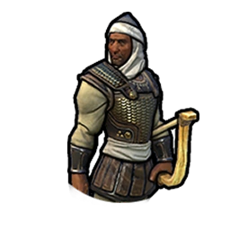
Spezialeinheit der Perser, die den Schwertkämpfer ersetzt. Einheit der Nahkampfklasse mit Fernangriff.  Reichweite von 2. Starke Verteidigungskraft.
Reichweite von 2. Starke Verteidigungskraft.
Persien Nader Schah

Satrapien
+1  Handelswegkapazität durch die Ausrichtung der Politischen Philosophie. Erhaltet +2
Handelswegkapazität durch die Ausrichtung der Politischen Philosophie. Erhaltet +2  Gold und +1
Gold und +1  Kultur durch Handelswege zwischen Euren eigenen Städten. Straßen auf Eurem Gebiet sind eine Stufe fortschrittlicher als üblich.
Kultur durch Handelswege zwischen Euren eigenen Städten. Straßen auf Eurem Gebiet sind eine Stufe fortschrittlicher als üblich.
Schwert von Persien
+5  Kampfstärke beim Angriff auf vollständig unbeschadete Einheiten. Nicht von Nader Schah gegründete Städte erhalten +2
Kampfstärke beim Angriff auf vollständig unbeschadete Einheiten. Nicht von Nader Schah gegründete Städte erhalten +2  Glauben und +3
Glauben und +3  Gold auf inländischen
Gold auf inländischen  Handelswegen.
Handelswegen.
Pairidaeza
Schaltet die Handwerker-Fähigkeit frei, eine Pairidaeza, die einzigartige Modernisierung Persiens, zu bauen.
+1  Kultur und +2
Kultur und +2  Gold. +1 Anziehungskraft. +1
Gold. +1 Anziehungskraft. +1  Kultur, wenn neben einer Heiligen Stätte oder einem Theaterplatz-Bezirk. +1
Kultur, wenn neben einer Heiligen Stätte oder einem Theaterplatz-Bezirk. +1  Gold, wenn neben einem Handels- oder Stadtzentrum. Zusätzlich
Gold, wenn neben einem Handels- oder Stadtzentrum. Zusätzlich  Kultur und
Kultur und  Tourismus beim Fortschritt durch den Technologie- und Ausrichtungsbaum. Kann nicht auf Schnee, Tundra, Schneehügeln, Tundra-Hügeln oder neben einer weiteren Pairidaeza gebaut werden.
Tourismus beim Fortschritt durch den Technologie- und Ausrichtungsbaum. Kann nicht auf Schnee, Tundra, Schneehügeln, Tundra-Hügeln oder neben einer weiteren Pairidaeza gebaut werden.
Krummsäbel - Kämpfer
Spezialeinheit der Perser, die den Schwertkämpfer ersetzt. Einheit der Nahkampfklasse mit Fernangriff.  Reichweite von 2. Starke Verteidigungskraft.
Reichweite von 2. Starke Verteidigungskraft.
Phönizien Dido

Mittelmeerkolonien
Beginnt das Spiel mit dem  Heureka der Schrift-Technologie. Küstenstädte, die von den Phöniziern gegründet wurden und sich auf dem gleichen Kontinent wie die phönizische
Heureka der Schrift-Technologie. Küstenstädte, die von den Phöniziern gegründet wurden und sich auf dem gleichen Kontinent wie die phönizische  Hauptstadt befinden, sind zu 100 % loyal. Gewasserte Siedler erlangen +2
Hauptstadt befinden, sind zu 100 % loyal. Gewasserte Siedler erlangen +2  Fortbewegung und +2 Sichtweite. Für Siedler gelten keinen zusätzlichen
Fortbewegung und +2 Sichtweite. Für Siedler gelten keinen zusätzlichen  Fortbewegungskosten für das Wassern und Ausschiffen.
Fortbewegungskosten für das Wassern und Ausschiffen.
Gründer von Karthago
Kann die ursprüngliche  Hauptstadt in eine andere, von ihnen gegründete Stadt mit einem Kothon verlegen, indem in dieser Stadt ein einzigartiges Projekt abschlossen wird. +1
Hauptstadt in eine andere, von ihnen gegründete Stadt mit einem Kothon verlegen, indem in dieser Stadt ein einzigartiges Projekt abschlossen wird. +1  Handelswegkapazität für jedes Regierungsplatzgebäude und den Regierungsplatz-Bezirk. +50 %
Handelswegkapazität für jedes Regierungsplatzgebäude und den Regierungsplatz-Bezirk. +50 %  Produktion für Bezirke in der Stadt mit dem Regierungsplatz.
Produktion für Bezirke in der Stadt mit dem Regierungsplatz.
Kothon
Ein ausschließlich Phönizien zur Verfügung stehender Bezirk für Marine-Aktivitäten in Eurer Stadt. Ersetzt den Hafenbezirk und ist günstiger im Bau. Muss an Küste oder See-Geländefeldern neben Land gebaut werden.
+50 %  Produktion für Marineeinheiten und Siedler in dieser Stadt. Alle verwundeten Marineeinheiten innerhalb der Stadtgrenzen regenerieren 100 Trefferpunkte pro Runde.
Produktion für Marineeinheiten und Siedler in dieser Stadt. Alle verwundeten Marineeinheiten innerhalb der Stadtgrenzen regenerieren 100 Trefferpunkte pro Runde.
Bireme
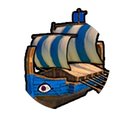
Phönizische einzigartige Einheit der Antike, die die Galeere ersetzt. Erhöhte  Kampfstärke und
Kampfstärke und  Fortbewegung. Händler-Einheiten sind immun gegen Plünderung, wenn sie sich innerhalb von 4 Geländefeldern um eine Bireme und auf einem Wasser-Geländefeld befinden.
Fortbewegung. Händler-Einheiten sind immun gegen Plünderung, wenn sie sich innerhalb von 4 Geländefeldern um eine Bireme und auf einem Wasser-Geländefeld befinden.
Polen Hedwig

Goldene Freiheit
Kulturschock auf angrenzenden Geländefeldern bei Fertigstellung eines Lagers oder einer Festung innerhalb freundlich gesinnten Gebiets. Ein Militärpolitik-Platz in der aktuellen Regierung wird in einen Joker-Platz umgewandelt.
Polnisch-Litauische Union
Polens Mehrheitsreligion wird zur vorherrschenden Religion in Städten, die ein Geländefeld durch einen polnischen Kulturschock verlieren. Heilige Stätten erhalten einen Glauben-Nachbarschaftsbonus von angrenzenden Bezirken. Alle Relikte gewähren einen Bonus auf Glauben (+2), Kultur (+2) und Gold (+4).
Sukiennice
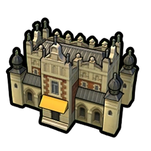
Einzigartiges Gebäude von Polen. Internationale  Handelswege von dieser Stadt erhalten +2
Handelswege von dieser Stadt erhalten +2  Produktion; inländische
Produktion; inländische  Handelswege erhalten +4
Handelswege erhalten +4  Gold. +1
Gold. +1  Handelsweg-Kapazität, wenn diese Stadt noch nicht über einen Leuchtturm verfügt.
Handelsweg-Kapazität, wenn diese Stadt noch nicht über einen Leuchtturm verfügt.
Flügelhusar

Polnische Spezialeinheit der Renaissance, die den Kürassier ersetzt. Drängt feindliche Einheiten in jeder Schlacht aus ihrem Geländefeld, bei der sie mehr Schaden bewirken. Verteidigungseinheiten erleiden zusätzlichen Schaden, wenn sie sich nicht zurückziehen können.
Portugal Johann III.

Casa da Índia
Internationale  Handelswege müssen von einer Küstenstadt ausgehen und können nur auf Wasser-Geländefeldern oder mit einem Hafen verlaufen, erhalten aber +50 % auf alle Erträge. Händler haben +50 % Reichweite zu Wasser und können wassern, sobald sie freigeschaltet wurden.
Handelswege müssen von einer Küstenstadt ausgehen und können nur auf Wasser-Geländefeldern oder mit einem Hafen verlaufen, erhalten aber +50 % auf alle Erträge. Händler haben +50 % Reichweite zu Wasser und können wassern, sobald sie freigeschaltet wurden.
Porta do Cerco
Alle Einheiten erhalten +1 Sicht. +1  Handelswegkapazität bei Begegnung mit einer Zivilisation. Offene Grenzen mit allen Stadtstaaten.
Handelswegkapazität bei Begegnung mit einer Zivilisation. Offene Grenzen mit allen Stadtstaaten.
Navigationsschule

Einzigartiges Gebäude von Portugal. +25 %  Produktion für Marineeinheiten in dieser Stadt. +1
Produktion für Marineeinheiten in dieser Stadt. +1  Wissenschaft für je zwei Küsten- oder See-Geländefelder in dieser Stadt. +1
Wissenschaft für je zwei Küsten- oder See-Geländefelder in dieser Stadt. +1  Großer-Admiral-Punkt and +1
Großer-Admiral-Punkt and +1  Großer-Wissenschaftler-Punkt pro Runde.
Großer-Wissenschaftler-Punkt pro Runde.
Feitoria
Schaltet die Nau-Fähigkeit frei, eine Feitoria zu bauen, die einzigartig für Portugal ist.
Gewährt +4  Gold und +1
Gold und +1  Produktion. Handelswege von Portugal zu dieser Stadt erhalten +4
Produktion. Handelswege von Portugal zu dieser Stadt erhalten +4  Gold und +1
Gold und +1  Produktion. Kann nur neben Luxus- oder Bonus-Ressourcen in Territorium von anderen Zivilisationen oder Stadtstaaten gebaut werden, mit denen Ihr ein Offene-Grenzen-Abkommen habt. Muss auf einem Küsten- oder See-Geländefeld angrenzend an Land gebaut werden und darf nicht an eine weitere Feitoria angrenzen. Kein Entfernen von Feitorias.
Produktion. Kann nur neben Luxus- oder Bonus-Ressourcen in Territorium von anderen Zivilisationen oder Stadtstaaten gebaut werden, mit denen Ihr ein Offene-Grenzen-Abkommen habt. Muss auf einem Küsten- oder See-Geländefeld angrenzend an Land gebaut werden und darf nicht an eine weitere Feitoria angrenzen. Kein Entfernen von Feitorias.
Nao
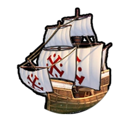
Portugiesische Marine-Nahkampf-Spezialeinheit, die die Karavelle ersetzt. Startet mit 1 kostenlosen Beförderung und benötigt weniger Unterhalt. Besitzt 2 Ladungen für den Bau von Feitorias.
Rom Julius Cäsar

Alle Wege führen nach Rom
Städte, die Ihr gründet oder einnehmt, starten mit einem Handelsposten. Städte in  Handelsweg-Reichweite Eurer
Handelsweg-Reichweite Eurer  Hauptstadt, starten auch mit einer Straße. Eure
Hauptstadt, starten auch mit einer Straße. Eure  Handelswege bringen +1
Handelswege bringen +1  Gold für das Passieren von Handelsposten in Euren eigenen Städten.
Gold für das Passieren von Handelsposten in Euren eigenen Städten.
Veni, vidi, vici
+300  Gold bei jeder erstmaligen Eroberung einer Stadt oder wenn Ihr
Gold bei jeder erstmaligen Eroberung einer Stadt oder wenn Ihr  Gold von einem Barbaren-Außenposten verdient. Sobald Ihr Metallguss erforscht habt, steigt der
Gold von einem Barbaren-Außenposten verdient. Sobald Ihr Metallguss erforscht habt, steigt der  Gold-Betrag auf +500 und auf +700 für Stahl (bei Standardgeschwindigkeit). Beim Angriff auf Barbaren erhaltet Ihr +5
Gold-Betrag auf +500 und auf +700 für Stahl (bei Standardgeschwindigkeit). Beim Angriff auf Barbaren erhaltet Ihr +5  Kampfstärke und verdient die gewöhnliche Anzahl von EP.
Kampfstärke und verdient die gewöhnliche Anzahl von EP.
Bad
Ein Bezirk, der das Wachstum der Stadt fördert. Steht nur Rom zur Verfügung. Ersetzt das Aquädukt und ist günstiger im Bau.
Versorgt Eure Stadt mit Süßwasser von einem angrenzenden Fluss, See, Berg oder einer angrenzenden Oase. Städte ohne Süßwasserquelle erhalten bis zu 6  Wohnraum. Städte, die bereits eine Süßwasserquelle haben, erhalten stattdessen +2
Wohnraum. Städte, die bereits eine Süßwasserquelle haben, erhalten stattdessen +2  Wohnraum.+1
Wohnraum.+1  Annehmlichkeit beim Bau neben einem geothermischen Riss. In jedem Fall bietet ein Bad einen zusätzlichen Bonus von +2
Annehmlichkeit beim Bau neben einem geothermischen Riss. In jedem Fall bietet ein Bad einen zusätzlichen Bonus von +2  Wohnraum und +1
Wohnraum und +1  Annehmlichkeit. Verhindert den Verlust von
Annehmlichkeit. Verhindert den Verlust von  Nahrung bei Dürre. Muss angrenzend ans Stadtzentrum gebaut werden. Militärpioniere können eine Ladung benutzen, um 20 % der Produktion eines Bads fertigzustellen.
Nahrung bei Dürre. Muss angrenzend ans Stadtzentrum gebaut werden. Militärpioniere können eine Ladung benutzen, um 20 % der Produktion eines Bads fertigzustellen.
Legion
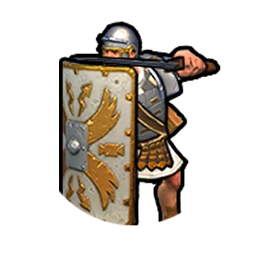
Spezial-Nahkampfeinheit der Römer der Klassik, die den Schwertkämpfer ersetzt. Kann ein Römisches Militärlager bauen.
Rom Trajan

Alle Wege führen nach Rom
Städte, die Ihr gründet oder einnehmt, starten mit einem Handelsposten. Städte in  Handelsweg-Reichweite Eurer
Handelsweg-Reichweite Eurer  Hauptstadt, starten auch mit einer Straße. Eure
Hauptstadt, starten auch mit einer Straße. Eure  Handelswege bringen +1
Handelswege bringen +1  Gold für das Passieren von Handelsposten in Euren eigenen Städten.
Gold für das Passieren von Handelsposten in Euren eigenen Städten.
Trajanssäule
Alle Städte starten mit einem zusätzlichen Stadtzentrum-Gebäude (in der Antike mit einem Monument).
Bad
Ein Bezirk, der das Wachstum der Stadt fördert. Steht nur Rom zur Verfügung. Ersetzt das Aquädukt und ist günstiger im Bau.
Versorgt Eure Stadt mit Süßwasser von einem angrenzenden Fluss, See, Berg oder einer angrenzenden Oase. Städte ohne Süßwasserquelle erhalten bis zu 6  Wohnraum. Städte, die bereits eine Süßwasserquelle haben, erhalten stattdessen +2
Wohnraum. Städte, die bereits eine Süßwasserquelle haben, erhalten stattdessen +2  Wohnraum.+1
Wohnraum.+1  Annehmlichkeit beim Bau neben einem geothermischen Riss. In jedem Fall bietet ein Bad einen zusätzlichen Bonus von +2
Annehmlichkeit beim Bau neben einem geothermischen Riss. In jedem Fall bietet ein Bad einen zusätzlichen Bonus von +2  Wohnraum und +1
Wohnraum und +1  Annehmlichkeit. Verhindert den Verlust von
Annehmlichkeit. Verhindert den Verlust von  Nahrung bei Dürre. Muss angrenzend ans Stadtzentrum gebaut werden. Militärpioniere können eine Ladung benutzen, um 20 % der Produktion eines Bads fertigzustellen.
Nahrung bei Dürre. Muss angrenzend ans Stadtzentrum gebaut werden. Militärpioniere können eine Ladung benutzen, um 20 % der Produktion eines Bads fertigzustellen.
Legion
Spezial-Nahkampfeinheit der Römer der Klassik, die den Schwertkämpfer ersetzt. Kann ein Römisches Militärlager bauen.
Russland Peter

Mütterchen Russland
Zusätzliches Territorium bei Stadtgründung. +1  Glauben und +1
Glauben und +1  Produktion durch Tundra. Einheiten erleiden keinen Schaden durch Schneestürme. Zivilisationen, die sich mit Russland im Krieg befinden, erleiden +100 % Einheitenschaden durch Schneestürme in russischem Gebiet.
Produktion durch Tundra. Einheiten erleiden keinen Schaden durch Schneestürme. Zivilisationen, die sich mit Russland im Krieg befinden, erleiden +100 % Einheitenschaden durch Schneestürme in russischem Gebiet.
Die Große Gesandtschaft
Erhält  Wissenschaft oder
Wissenschaft oder  Kultur durch
Kultur durch  Handelswege zu Zivilisationen, die fortschrittlicher sind als Russland. +1 pro 3 Technologien oder Ausrichtungen voraus.
Handelswege zu Zivilisationen, die fortschrittlicher sind als Russland. +1 pro 3 Technologien oder Ausrichtungen voraus.
Lawra

Ein Bezirk für religiöse Aktivitäten. Steht nur Russland zur Verfügung. Ersetzt den Heilige-Stätte-Bezirk und ist günstiger im Bau.
Eure Stadtgrenzen erweitern sich für jede in der Stadt verbrauchte Große Persönlichkeit um ein Geländefeld. Die Lawra bietet +1  Großer-Schriftsteller-Punkt pro Runde mit einem Schrein, +1
Großer-Schriftsteller-Punkt pro Runde mit einem Schrein, +1  Großer-Künstler-Punkt pro Runde mit einem Tempel und +1
Großer-Künstler-Punkt pro Runde mit einem Tempel und +1  Großer-Musiker-Punkt pro Runde mit einem Kultgebäude.
Großer-Musiker-Punkt pro Runde mit einem Kultgebäude.
Kosak
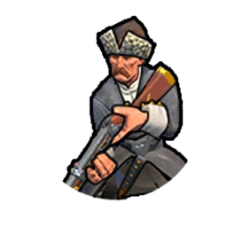
Russische Spezialeinheit des Industriezeitalters, die die Kavallerie ersetzt. Stärker als Kavallerie und erhält +5  Kampfstärke bei Kämpfen auf oder neben eigenem Gebiet. Kann sich nach dem Angriff fortbewegen, wenn noch
Kampfstärke bei Kämpfen auf oder neben eigenem Gebiet. Kann sich nach dem Angriff fortbewegen, wenn noch  Fortbewegungspunkte übrig sind.
Fortbewegungspunkte übrig sind.
Schottland Robert I.

Schottische Aufklärung
Zufriedene Städte erhalten zusätzliche +5 %  Wissenschaft und +5 %
Wissenschaft und +5 %  Produktion. Zufriedene Städte generieren +1
Produktion. Zufriedene Städte generieren +1  Großer-Wissenschaftler-Punkt pro Campus und +1
Großer-Wissenschaftler-Punkt pro Campus und +1  Großer-Ingenieur-Punkt pro Industriegebiet. Begeisterte Städte verdoppeln dies jeweils.
Großer-Ingenieur-Punkt pro Industriegebiet. Begeisterte Städte verdoppeln dies jeweils.
Bannockburn
Kann einen Befreiungskrieg erklären, nachdem die Ausrichtung Verteidigungstaktiken gelernt wurde. +100 %  Produktion und +2
Produktion und +2  Fortbewegung für die ersten 10 Runden nach der Erklärung des Befreiungskriegs.
Fortbewegung für die ersten 10 Runden nach der Erklärung des Befreiungskriegs.
Golfplatz

Schaltet die Handwerker-Fähigkeit frei, einen Golfplatz, die einzigartige Modernisierung Schottlands, zu bauen.
+2  Annehmlichkeiten und +2
Annehmlichkeiten und +2  Gold. +1
Gold. +1  Kultur, wenn er an ein Stadtzentrum angrenzt und +1
Kultur, wenn er an ein Stadtzentrum angrenzt und +1  Kultur, wenn er an einen Unterhaltungskomplex angrenzt. Zusätzlicher
Kultur, wenn er an einen Unterhaltungskomplex angrenzt. Zusätzlicher  Tourismus und
Tourismus und  Wohnraum für Euren Fortschritt beim Ausrichtungs- und Technologiebaum. Kann nicht auf Geländefeldern mit Wüste oder Wüstenhügeln platziert werden. Einer pro Stadt. Geländefelder mit Golfplätzen können nicht getauscht werden. +1 Anziehungskraft.
Wohnraum für Euren Fortschritt beim Ausrichtungs- und Technologiebaum. Kann nicht auf Geländefeldern mit Wüste oder Wüstenhügeln platziert werden. Einer pro Stadt. Geländefelder mit Golfplätzen können nicht getauscht werden. +1 Anziehungskraft.
Highlander
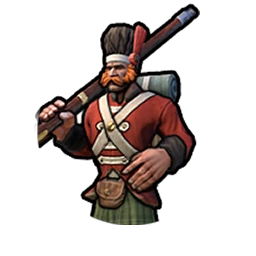
Schottische Spezialeinheit des Industriezeitalters, die den Ranger ersetzt. Starke Aufklärungseinheit. +5  Kampfstärke beim Kampf in Hügel- und Wald-Gelände.
Kampfstärke beim Kampf in Hügel- und Wald-Gelände.
Skythien Tomyris

Volk der Steppe
Erhaltet jedes Mal eine zweite Leichte Kavallerieeinheit oder einen berittenen Saken-Bogenschützen, wenn eine Leichte Kavallerieeinheit oder ein berittener Saken-Bogenschütze ausgebildet wird.
Schlächter von Kyros
Alle Einheiten erhalten +5  Kampfstärke beim Angriff auf verwundete Einheiten. Wenn sie eine Einheit ausschalten, werden bis zu 30 Trefferpunkte geheilt.
Kampfstärke beim Angriff auf verwundete Einheiten. Wenn sie eine Einheit ausschalten, werden bis zu 30 Trefferpunkte geheilt.
Kurgan
Schaltet die Handwerker-Fähigkeit frei, einen Kurgan, die einzigartige Modernisierung Skythiens, zu bauen.
+1  Glauben. +1
Glauben. +1  Gold. +1
Gold. +1  Glauben für jede angrenzende Weide (+2 nach Erforschung der Steigbügel). Gewährt
Glauben für jede angrenzende Weide (+2 nach Erforschung der Steigbügel). Gewährt  Tourismus durch
Tourismus durch  Kultur nach der Erforschung von Luftfahrt. Kann nicht auf Hügeln gebaut werden.
Kultur nach der Erforschung von Luftfahrt. Kann nicht auf Hügeln gebaut werden.
Berittener Saken - Bogenschütze

Skythische Spezialeinheit der Klassik. Fernkampfeinheit mit 4  Fortbewegung, mit einer
Fortbewegung, mit einer  Reichweite von 1.
Reichweite von 1.
Spanien Philipp II.

Schatzflotte
Erstellt Flotten und Armadas aus Marineeinheiten durch Merkantilismus statt Nationalismus und Mobilisierung.  Handelswege erhalten +3
Handelswege erhalten +3  Gold, +2
Gold, +2  Glauben und +1
Glauben und +1  Produktion. Kontinente verbindende
Produktion. Kontinente verbindende  Handelswege erhalten die dreifache Menge. Städte, die sich nicht auf dem gleichen Kontinent wie Eure ursprüngliche Hauptstadt befinden, erhalten bei der Gründung +25 %
Handelswege erhalten die dreifache Menge. Städte, die sich nicht auf dem gleichen Kontinent wie Eure ursprüngliche Hauptstadt befinden, erhalten bei der Gründung +25 %  Produktion durch Bezirke sowie einen Handwerker.
Produktion durch Bezirke sowie einen Handwerker.
El Escorial
Inquisitoren können ein zusätzliches Mal Ketzerei entfernen. Inquisitoren eliminieren 100 % der Anwesenheit anderer Religionen. Kampf- und religiöse Einheiten haben einen Bonus von +5  Kampfstärke gegen Spieler, die anderen Religionen folgen.
Kampfstärke gegen Spieler, die anderen Religionen folgen.
Mission
Erlaubt Handwerkern eine Mission, die einzigartige Modernisierung Spaniens, zu bauen.
+2  Glauben. +2
Glauben. +2  Glauben, +1
Glauben, +1  Produktion und +1
Produktion und +1  Nahrung, wenn auf einem anderen Kontinent als Eure
Nahrung, wenn auf einem anderen Kontinent als Eure  Hauptstadt. +1
Hauptstadt. +1  Wissenschaft für jeden benachbarten Campus- und Heilige-Stätte-Bezirk. Zusätzliche
Wissenschaft für jeden benachbarten Campus- und Heilige-Stätte-Bezirk. Zusätzliche  Wissenschaft nach der Entdeckung des Kulturerbes. +2 Loyalität pro Runde für Städte mit einer ans Stadtzentrum angrenzenden Missionsmodernisierung, die nicht auf dem Kontinent Eurer ursprünglichen
Wissenschaft nach der Entdeckung des Kulturerbes. +2 Loyalität pro Runde für Städte mit einer ans Stadtzentrum angrenzenden Missionsmodernisierung, die nicht auf dem Kontinent Eurer ursprünglichen  Hauptstadt liegen.
Hauptstadt liegen.
Konquistador

Spanische Spezialeinheit der Renaissance. Ersetzt den Musketier. +10  Kampfstärke mit religiösen Einheiten innerhalb eines Geländefelds. Nimmt diese Einheit eine Stadt ein oder ist neben einer Stadt, während diese eingenommen wird, wird die Religion des Konquistador-Spielers automatisch als vorherrschende Religion eingeführt.
Kampfstärke mit religiösen Einheiten innerhalb eines Geländefelds. Nimmt diese Einheit eine Stadt ein oder ist neben einer Stadt, während diese eingenommen wird, wird die Religion des Konquistador-Spielers automatisch als vorherrschende Religion eingeführt.
Sumer Gilgamesch

Epische Quests
Wenn Ihr einen Barbaren-Außenposten auflöst, erhaltet Ihr zusätzlich zur üblichen  Goldbelohnung auch eine Stammesdorf-Belohnung. Das Ausheben von Stadtstaat-Einheiten kostet nur die Hälfte.
Goldbelohnung auch eine Stammesdorf-Belohnung. Das Ausheben von Stadtstaat-Einheiten kostet nur die Hälfte.
Abenteuer von Enkidu
Wenn man gegen einen gemeinsamen Feind im Krieg ist, werden die Belohnungen beim Plündern und die gewonnene Kampferfahrung innerhalb von 5 Geländefeldern geteilt. Allianzen erhalten Allianzpunkte, wenn sie Krieg gegen einen gemeinsamen Feind führen. +5  Kampfstärke gegen Einheiten von Spielern, die sich mit Euch oder Eurem Verbündeten im Krieg befinden.
Kampfstärke gegen Einheiten von Spielern, die sich mit Euch oder Eurem Verbündeten im Krieg befinden.
Zikkurat
Schaltet die Handwerker-Fähigkeit frei, eine Zikkurat, die einzigartige Modernisierung Sumers zu bauen.
+2  Wissenschaft. +1
Wissenschaft. +1  Kultur, wenn neben einem Fluss. Kann nicht auf Hügeln gebaut werden, kann aber auf Schwemmland gebaut werden.
Kultur, wenn neben einem Fluss. Kann nicht auf Hügeln gebaut werden, kann aber auf Schwemmland gebaut werden.
Kriegswagen
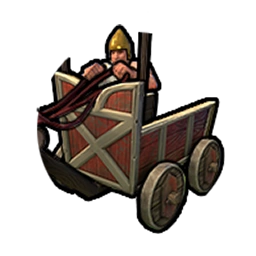
Sumerische Spezialeinheit der Antike. Stärker als alle anderen Starteinheiten. Keine Malusse gegen Kavallerie-Abwehr-Einheiten. 4  Fortbewegungspunkte bei Start auf offenem Gelände.
Fortbewegungspunkte bei Start auf offenem Gelände.
Schweden Kristina

Nobelpreis
Schweden erhält 50  diplomatische Gunst, wenn es eine Große Persönlichkeit verdient (auf Standardgeschwindigkeit). Schweden erhält +1
diplomatische Gunst, wenn es eine Große Persönlichkeit verdient (auf Standardgeschwindigkeit). Schweden erhält +1  Großer-Ingenieur-Punkt durch Fabriken und +1
Großer-Ingenieur-Punkt durch Fabriken und +1  Großer-Wissenschaftler-Punkt durch Universitäten. Wenn Schweden mit im Spiel ist, beginnen im Industriezeitalter drei zusätzliche einzigartige Weltkongress-Wettkämpfe.
Großer-Wissenschaftler-Punkt durch Universitäten. Wenn Schweden mit im Spiel ist, beginnen im Industriezeitalter drei zusätzliche einzigartige Weltkongress-Wettkämpfe.
Pallas des Nordens
Gebäude mit mindestens drei Plätzen für Große Werke und Wunder mit mindestens zwei Plätzen für Große Werke haben automatisch ein Thema, wenn die Plätze gefüllt sind, Sie kann auf dem Regierungsplatz die Bibliothek der Königin bauen.
Bibliothek der Königin

Einzigartiges Gebäude von Schweden. Dieses Gebäude bietet 2 Plätze für  Literatur,
Literatur,  Musik und eine beliebige
Musik und eine beliebige  Kunstform.
Kunstform.
Gewährt +1  Gouverneur-Titel.
Gouverneur-Titel.
Freilichtmuseum

Schaltet die Handwerker-Fähigkeit frei, ein Freilichtmuseum, die einzigartige Modernisierung Schwedens, zu bauen.
Bringt +2 Loyalität pro Runde in dieser Stadt. +2  Kultur und +2
Kultur und +2  Tourismus für jede Geländeart (Schnee, Tundra, Wüste, Ebenen oder Grasland), auf der wenigstens eine schwedische Stadt gegründet wird. Eins pro Stadt. Geländefelder mit Freilichtmuseen können nicht getauscht werden.
Tourismus für jede Geländeart (Schnee, Tundra, Wüste, Ebenen oder Grasland), auf der wenigstens eine schwedische Stadt gegründet wird. Eins pro Stadt. Geländefelder mit Freilichtmuseen können nicht getauscht werden.
Karoliner
Einzigartige schwedische Einheit der Renaissance, die den Musketenpikenier ersetzt. Schneller als der Musketenpikenier. +3  Kampfstärke pro nicht benutzter
Kampfstärke pro nicht benutzter  Fortbewegung.
Fortbewegung.
Vietnam Bà Triệu

Mekongdelta
Land-Spezialbezirke können nur auf Regenwald-, Sumpf- oder Wald-Geländefeldern gebaut werden. Ihr erhaltet folgende Erträge für jedes Gebäude, das auf einer dieser Geländearten steht: +1  Kultur auf Wald, +1
Kultur auf Wald, +1  Wissenschaft auf Regenwald und +1
Wissenschaft auf Regenwald und +1  Produktion auf Sumpf. Wald kann mit der Mittelaltermärkte-Ausrichtung gepflanzt werden.
Produktion auf Sumpf. Wald kann mit der Mittelaltermärkte-Ausrichtung gepflanzt werden.
Die Aggressoren vertreiben
+5  Kampfstärke für Einheiten, die auf Regenwald-, Sumpf- oder Wald-Geländefeldern kämpfen. +1
Kampfstärke für Einheiten, die auf Regenwald-, Sumpf- oder Wald-Geländefeldern kämpfen. +1  Fortbewegung, wenn sie ihre Runde dort beginnen. Beide Bonusse werden verdoppelt, wenn sich dieses Geländefeld in Eurem Territorium befindet.
Fortbewegung, wenn sie ihre Runde dort beginnen. Beide Bonusse werden verdoppelt, wenn sich dieses Geländefeld in Eurem Territorium befindet.
Thành
Ein Bezirk, der ausschließlich Vietnam zur Verfügung steht und den Lagerbezirk ersetzt. +2  Kultur für jeden angrenzenden Bezirk. Erhaltet nach der Erforschung von Luftfahrt
Kultur für jeden angrenzenden Bezirk. Erhaltet nach der Erforschung von Luftfahrt  Tourismus in gleicher Höhe wie
Tourismus in gleicher Höhe wie  Kultur. Dieser Bezirk erfordert keine Bevölkerung, ist günstiger zu bauen, kann nicht an das Stadtzentrum angrenzen, gewährt keine
Kultur. Dieser Bezirk erfordert keine Bevölkerung, ist günstiger zu bauen, kann nicht an das Stadtzentrum angrenzen, gewährt keine  Große-Persönlichkeit-Punkte und ist kein Spezialbezirk.
Große-Persönlichkeit-Punkte und ist kein Spezialbezirk.
Voi Chiến

Vietnamesische Fernkampf-Spezialeinheit des Mittelalters, die den Armbrustschützen ersetzt. Diese Einheit besitzt zusätzliche Fortbewegung und kann sich nach einem Angriff bewegen. Sie ist in der Verteidigung stärker und teurer und besitzt eine bessere Sicht.
Zululand Shaka

Isibongo
Städte mit Garnisons-Einheit erhalten +3 Loyalität pro Runde oder +5, wenn es sich um ein Korps oder eine Armee handelt. Eine Einheit, die eine Stadt einnimmt, wird zu einem Korps oder einer Armee verbessert, wenn Ihr die richtigen Ausrichtungen freigeschaltet habt.
Amabutho
Kann Korps (Söldner-Ausrichtung) und Armeen (Nationalismus-Ausrichtung) früher formen. Zusätzlich +5  Basis-Kampfstärke für Korps und Armeen.
Basis-Kampfstärke für Korps und Armeen.
Ikanda

Ein ausschließlich dem Zulu-Reich zur Verfügung stehender Bezirk, der das Lager ersetzt. Gewährt +1  Wohnraum. Sobald die Ausrichtungs- oder Technologie-Voraussetzung erfüllt ist, können Korps und Armeen sofort gebaut werden. Gebäude in der Ikanda erhalten +2
Wohnraum. Sobald die Ausrichtungs- oder Technologie-Voraussetzung erfüllt ist, können Korps und Armeen sofort gebaut werden. Gebäude in der Ikanda erhalten +2  Gold und +1
Gold und +1  Wissenschaft. Schnellerer Bau von Korps und Armee.
Wissenschaft. Schnellerer Bau von Korps und Armee.
Impi
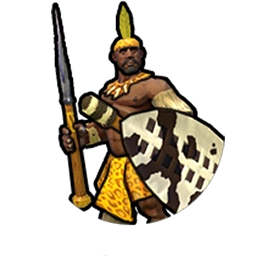
Mittelalterliche Zulu-Spezialeinheit, die den Pikenier ersetzt. Erhöhter Flankierungsbonus, geringe Kosten und geringer Unterhalt. Verdient schneller EP.